📺Cài app lên TV (TV Setup)Install the app on the TV (TV Setup)
TV Setup là app nhỏ trên TV. Nó cho trang web của TV, hẹn giờ tắt, giới hạn app và nhiều thứ khác chạy ngay trên TV.TV Setup is a small app on the TV. It runs the TV's web page, the sleep timer, app limits and more, right on the TV.
Trên TV, mở CH Play, tìm Downloader (AFTVnews, biểu tượng cam) và cài.On the TV, open Google Play, find Downloader (AFTVnews, orange icon) and install it.
Mở Downloader (cho phép truy cập tệp nếu nó hỏi), gõ mã 2397346 rồi chọn Go.Open Downloader (allow file access if it asks), type 2397346 and choose Go.
Chọn Install. TV chặn nguồn lạ thì chọn Cài đặt, cho phép Downloader, quay lại, cài tiếp.Choose Install. If the TV blocks unknown sources, choose Settings, allow Downloader, go back, install.
Mở TV Setup. Chưa bật ADB thì app mở thẳng chỗ bật: bật Gỡ lỗi ADB, quay lại, chọn Kết nối → Kết nối lại.Open TV Setup. If ADB is off, it opens the switch for you: turn on ADB debugging, come back, choose Connection → Reconnect.
⚠️ Play Protect có thể cảnh báo vì app có quyền cài APK. Mã nguồn công khai trên GitHub; chọn “Vẫn cài” nếu bạn tin.⚠️ Play Protect may warn because the app can install APKs. The source is public on GitHub; choose “Install anyway” if you trust it.
📱Cài app điện thoại (Android)Install the phone app (Android)
Trên điện thoại Android, mở trang chủ này, bấm tải tv-remote.apk rồi mở file. Android hỏi “ứng dụng không rõ nguồn” thì cho phép trình duyệt cài.On the Android phone, open the home page, tap tv-remote.apk, then open the file. If Android asks about “unknown apps”, allow the browser.
Mở TV Remote, bấm Quét Wi-Fi rồi chọn TV (hoặc gõ địa chỉ TV).Open TV Remote, tap Scan Wi-Fi and pick the TV (or type its address).
Lần đầu TV hỏi “Cho phép gỡ lỗi USB?”: tích Luôn cho phép rồi OK. Xem phần này.The first time the TV asks “Allow USB debugging?”: tick Always allow and OK. See this part.
Xong: hình TV hiện trên điện thoại. TV chưa bật ADB thì vẫn bấm phím được.Done: the TV's picture is on the phone. ADB not on yet? Keys still work.
💡 Điện thoại và TV phải cùng Wi-Fi. App tự báo khi có bản mới. Cài lên thiết bị Android khác: mã Downloader 2973135.💡 The phone and the TV must be on the same Wi-Fi. The app tells you when a new version exists. Another Android device: Downloader code 2973135.
💻Cài app máy tínhInstall the computer app
Tải bản cho máy bạn (link bên dưới) rồi giải nén.Download the build for your computer (links below) and unpack it.
Mở app: Mac kéo TV Remote vào Applications rồi mở; Windows chạy TV Remote.exe; Linux chạy tv-remote/bin/tv-remote.Open it: on a Mac drag TV Remote to Applications and open it; on Windows run TV Remote.exe; on Linux run tv-remote/bin/tv-remote.
Lần đầu máy chặn? Mac: Cài đặt hệ thống → Quyền riêng tư & Bảo mật → Vẫn mở. Windows: More info → Run anyway.Blocked the first time? Mac: System Settings → Privacy & Security → Open Anyway. Windows: More info → Run anyway.
App tự quét mạng tìm TV (hoặc gõ địa chỉ rồi Kết nối). Rồi làm theo “Cho phép gỡ lỗi USB?”.The app scans for TVs (or type an address and Connect). Then follow “Allow USB debugging?”.
💡 App máy tính tự cập nhật khi có bản mới. Không cần Python, adb hay ffmpeg. Linux cần gói libwebkit2gtk-4.1-0.💡 The computer app updates itself. No Python, adb or ffmpeg needed. Linux needs libwebkit2gtk-4.1-0.
🔗Mở trang web của TV (iPhone, trình duyệt)Open the TV's web page (iPhone, any browser)
iPhone không có app. Thay vào đó, TV tự phát một trang web điều khiển. Mở bằng Safari hay trình duyệt nào cũng được.iPhone has no app. Instead the TV serves its own control page. Open it in Safari or any browser.
TV Setup192.168.1.20:8765
Mã ghépPairing code
482 913
✓ Đã ghép iPhoneiPhone paired
🔗 Ghép với TV🔗 Pair with the TV
📺 Hiện mã trên TV📺 Show the code on the TV
482913
✓ Ghép✓ Pair
✓ Đã ghépPaired
Trên iPhone, quét mã QR mà TV Setup hiện, hoặc gõ http://<địa chỉ TV>:8765 vào Safari.On the iPhone scan the QR code TV Setup shows, or type http://<TV address>:8765 in Safari.
Trang hiện 🔗 Ghép với TV. Bấm 📺 Hiện mã trên TV.The page shows 🔗 Pair with the TV. Tap 📺 Show the code on the TV.
Nhìn lên TV: có mã 6 số. Gõ mã vào trang rồi bấm ✓ Ghép.Look at the TV: it shows a 6-digit code. Type it on the page and tap ✓ Pair.
Xong. Lần sau mở lại là dùng được ngay, không hỏi mã nữa.Done. Next time it opens straight away with no code.
💡 Mẹo iPhone: bấm Chia sẻ → Thêm vào MH chính (Add to Home Screen) để có biểu tượng như một app.💡 iPhone tip: tap Share → Add to Home Screen to get an app-like icon.
💡 Trang chạy trên TV nên TV phải bật. Mã ghép chỉ để người trong nhà, đừng đưa ra Internet.💡 The page runs on the TV, so the TV must be on. Keep it to your home network; never put port 8765 on the Internet.
📶Bấm phím khi TV chưa mở ADBKeys before ADB is on
Chưa bật ADB vẫn điều khiển được. App điện thoại và app máy tính bấm phím bằng giao thức Android TV Remote của Google, nên nhiều TV dùng được ngay.You can still control the TV before ADB is on. The phone and computer apps send keys with Google's Android TV Remote protocol, so many TVs work at once.
Mở app, chọn TV và bấm Kết nối.Open the app, pick the TV and tap Connect.
TV hiện một mã 6 ký tự.The TV shows a 6-character code.
Gõ mã vào app. Xong: các phím dùng được.Type the code in the app. Done: the keys work.
Xem hình, chạm lên hìnhSeeing and touching the picture
Thêm phím cơ bản (phím media, nguồn)The basic extra keys (media, power)
Ứng dụng, tệp, sức khỏe, thông báo, gõ chữ, hẹn giờ trên TVApps, files, health, notifications, typing, TV timers
Chưa có ADB thì trang Quản lý sẽ chỉ bạn bật nó: bấm 🧭 Bật ADB giúp tôi.Without ADB the Manage page shows you how to turn it on: tap 🧭 Turn ADB on for me.
Bấm nút không ăn (app máy tính)? Vào tab 📺 Thiết lập và ghép nút remote bằng mã 6 ký tự TV hiện. Cũng kiểm tra bạn không mở hai cửa sổ cho cùng một TV.Buttons do nothing (computer app)? Open the 📺 Setup tab and pair the remote with the 6-character code the TV shows. Also check you do not have two windows open for the same TV.
📡Remote hồng ngoại (không cần mạng)Infrared remote (no network)
Điện thoại có đèn hồng ngoại (nhiều máy Xiaomi, Huawei, Samsung đời cũ) thì dùng được như remote giấy: không cần Wi-Fi, không cần chọn TV. Chỉ có ở app điện thoại.A phone with an IR blaster (many Xiaomi, Huawei and older Samsung phones) works like a paper remote: no Wi-Fi, no TV to pick. Phone app only.
Ở danh sách TV, bấm Remote hồng ngoại (chỉ hiện khi máy có đèn hồng ngoại): các remote đã lưu hiện trước, bấm một cái là dùng. Remote mới: Thêm remote.On the list of TVs, tap Infrared remote (shown only when the phone has an IR blaster): your saved remotes come first, one tap and it is ready. A new one: Add a remote.
Chọn hãng (nhiều kiểu thì Kiểu 1 phổ biến nhất), đặt tên (vd TV phòng ngủ). Sang máy khác: Xuất file rồi Nhập file.Pick the brand (several kinds: Type 1 is the most common), give it a name (e.g. Bedroom TV). To another phone: Export, then Import.
Không có trong danh sách (box của nhà mạng, FPT Play Box)? Bấm Dò mã: app gửi lần lượt từng mã, thấy thiết bị phản hồi thì bấm Có phản hồi, app nhớ mã đó.Not in the list (an operator box, FPT Play Box)? Tap Find code: it sends the codes one at a time; when the device reacts tap It reacted and the app keeps that code.
Android TV đã kết nối? Dò mã tự chạy: hướng đèn vào TV, TV tự báo mã đúng.A connected Android TV? Find code runs by itself: point the LED at the TV, the TV says which code works.
Mã lấy từ Flipper-IRDB (CC0). Bấm giữ phím mũi tên, âm lượng, kênh để lặp.Codes come from Flipper-IRDB (CC0). Hold an arrow, volume or channel key to repeat.
🖱️Air MouseAir Mouse
Cầm điện thoại như điều khiển, xoay cổ tay là con trỏ chạy trên TV, như Magic Remote của LG. Hợp với app không dùng được phím mũi tên (trình duyệt, vài app cũ).Hold the phone like a remote: turning your wrist moves a pointer on the TV, like LG's Magic Remote. Good for apps the arrow keys cannot drive (a browser, some old apps).
Chỉ có ở app điện thoại. Android TV cần ADB; TV LG dùng con trỏ của TV.Phone app only. Android TVs need ADB; LG TVs use their own pointer.
Trên remote, bấm Thêm → Air Mouse.On the remote, tap More → Air Mouse.
Chạm vào ô lớn để click, 2 ngón kéo lên / xuống để cuộn. Tạm dừng khi cần đặt điện thoại xuống.Tap the big pad to click, drag two fingers up / down to scroll. Pause when you put the phone down.
Xong: bấm ✓ hoặc nút Back, con trỏ biến mất.Done: tap ✓ or Back, and the pointer goes away.
🔧Bật ADB bằng tay (khi cần)Turn on ADB by hand (if needed)
Không bắt buộc, và thường không cần làm: TV Setup tự mở chỗ bật. Chưa bật ADB thì app điện thoại và app máy tính vẫn bấm phím được. Bật ADB để có thêm hình TV, app, tệp, hẹn giờ.Optional, and usually not needed: TV Setup opens the switch itself. Without ADB the phone and computer apps still send keys. ADB adds the TV picture, apps, files and timers.
Tự động (dễ nhất):cài TV Setup rồi mở. App mở thẳng Tùy chọn nhà phát triển, kể cả khi TV giấu Cài đặt. Bật Gỡ lỗi ADB, quay lại, chọn Kết nối → Kết nối lại.Automatic (easiest):install TV Setup and open it. It opens Developer options directly, even when the TV hides Settings. Turn on ADB debugging, come back, choose Connection → Reconnect.
Không thấy Tùy chọn nhà phát triển?Cài đặt → Tùy chọn thiết bị → Giới thiệu, bấm OK 7 lần vào Bản dựng, rồi bật Gỡ lỗi ADB.No Developer options?Settings → Device Preferences → About, press OK 7 times on Build, then turn on ADB debugging.
TCL (bản Trung Quốc) không có Tùy chọn nhà phát triển? Vào Cài đặt → Giới thiệu, bấm Lên, Xuống, Trái, Phải nhiều vòng tới khi hiện “ADB: địa chỉ:cổng”. Lần nào cần cũng phải làm lại.TCL (China) with no Developer options? Go to Settings → About, press Up, Down, Left, Right round after round until “ADB: address:port” shows. Repeat it each time.
Bản dựng đòi mật khẩu (box FPT Play…)? Cài TV Setup, nó mở thẳng chỗ bật. Vẫn kẹt: 🧭 Bật ADB giúp tôi, hoặc bỏ qua, phím vẫn dùng được.Build asks for a password (FPT Play boxes…)? Install TV Setup, it opens the switch. Still stuck: 🧭 Turn ADB on for me, or skip it, keys still work.
📡 Nên bật thêm: Mạng & Internet → Khởi động từ xa (Remote start), để đánh thức TV từ xa.📡 Also worth turning on: Network & Internet → Remote start, so the TV can be woken from afar.
💡 Địa chỉ TV: TV Setup hiện sẵn. Tự tìm: Cài đặt → Mạng & Internet → bấm tên Wi-Fi, dạng 192.168.1.20. Tên các mục có thể khác chút tùy hãng.💡 The TV’s address: TV Setup shows it. By hand: Settings → Network & Internet → the Wi-Fi name, like 192.168.1.20. Menu names vary a little by brand.
📡Ghép qua Gỡ lỗi không dây (Android 11+)Pair with Wireless debugging (Android 11+)
Một số Google TV đời mới chỉ có “Gỡ lỗi không dây”, không có cổng ADB thường. App điện thoại và app máy tính ghép được bằng cách này, không cần bật Gỡ lỗi USB.Some newer Google TVs only have “Wireless debugging” and no plain ADB port. The phone and computer apps can pair this way, with no USB debugging needed.
Mở 🧭 Bật ADB giúp tôi trong app, chọn 📡 Ghép bằng Gỡ lỗi không dây.Open 🧭 Turn ADB on for me in the app and choose 📡 Pair with Wireless debugging.
Trên TV: Cài đặt → Tùy chọn nhà phát triển → Gỡ lỗi không dây → Ghép nối thiết bị bằng mã ghép nối.On the TV: Settings → Developer options → Wireless debugging → Pair device with pairing code.
Nhập IP:cổng ghép nối và mã 6 số TV hiện ra, bấm 🔗 Ghép.Type the pairing IP:port and the 6-digit code the TV shows, tap 🔗 Pair.
Nếu app hỏi cổng kết nối: lấy ở màn hình Gỡ lỗi không dây, dưới “Địa chỉ IP và cổng”, rồi bấm Ghép lại.If the app asks for the connect port: read it on the Wireless debugging screen, under “IP address & Port”, then tap Pair again.
⚠️ Mã sai hoặc hết hạn thì TV hiện mã mới: gõ lại. Chỉ có trên app điện thoại và app máy tính, không có trên trang web của TV.⚠️ A wrong or expired code means the TV shows a new one: type it again. Only in the phone and computer apps, not on the TV's web page.
🔑Kết nối và “Cho phép gỡ lỗi USB?”Connect and “Allow USB debugging?”
Lần đầu một máy nối vào TV, TV hỏi xem có tin máy đó không. Đây là bước an toàn của Android, chỉ làm một lần cho mỗi máy.The first time a device connects, the TV asks whether to trust it. This is Android's safety step; once per device.
TV của bạnYour TV
192.168.1.20
Kết nốiConnect
👀
Nhìn lên TVLook at the TV
🎮 Remote
Cho phép gỡ lỗi USB?Allow USB debugging?
✓Luôn cho phépAlways allow
HủyCancelOK
Trong app, chọn TV và bấm Kết nối.In the app pick the TV and tap Connect.
App hiện “Nhìn lên TV”. Trên TV hiện hộp Cho phép gỡ lỗi USB?.The app says “Look at the TV”. The TV shows Allow USB debugging?.
Dùng điều khiển TV: tích Luôn cho phép (từ máy này), rồi chọn OK.With the TV's own remote tick Always allow, then choose OK.
App tự vào màn hình điều khiển.The app goes to the remote on its own.
⚠️ Chỉ bấm Cho phép khi chính bạn vừa bấm Kết nối. Hộp này cho phép máy kia điều khiển sâu TV.⚠️ Only allow when you just tapped Connect yourself. This box gives that device deep control of the TV.
Tab 🎮 Remote giống điều khiển thật. Chạm là bấm.The 🎮 Remote tab works like a real remote. Tap to press.
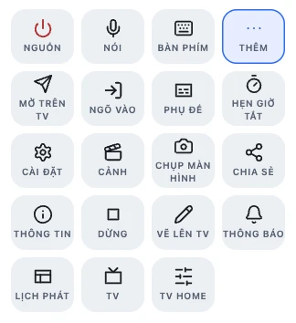
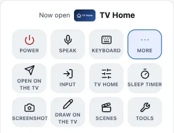
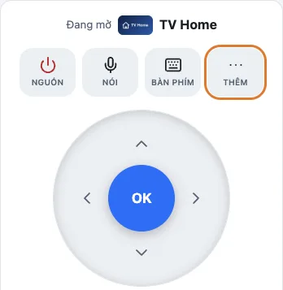
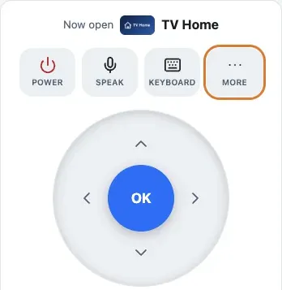
PhímKey
Làm gìWhat it does
NguồnPower
Bật hoặc tắt TV. TV ngủ sâu: bấm ☀️ Đánh thức cạnh TV trong danh sách (app máy tính).Turns the TV on or off. A TV in deep standby: ☀️ Wake beside it in the TV list (computer app).
Mũi tên + OKArrows + OK
Di chuyển và chọn.Move and choose.
Quay lại · Home · MenuBack · Home · Menu
Ba phím điều hướng.The three navigation keys.
Âm lượng · KênhVolume · Channel
Hai nút dài, bấm trên hoặc dưới.Two long pills; tap top or bottom.
Nói điều muốn TV làm (vd: mở YouTube). Giữ: mở Trợ lý của TV.Say what the TV should do (e.g. open YouTube). Hold: the TV's Assistant.
Thêm phímMore keys
Ngõ vào, Cài đặt, Thông tin, Lịch phát, TV, Phụ đề, Dừng, Chụp màn hình, Mở trên TV, Hẹn giờ tắt, Cảnh, Vẽ lên TV, Thông báo, Chia sẻ, TV Home, Hồng ngoại (chỉ app điện thoại).Input, Settings, Info, Guide, Live TV, Subtitles, Stop, Screenshot, Open on the TV, Sleep timer, Scenes, Draw on the TV, Notify, Share, TV Home, Infrared (phone app only).
Mở trên TV (trong Thêm phím): Mở app đã cài (chọn app, có ô tìm), Tải app (CH Play, YouTube, Kodi…), mở link, Gửi lên TV (ảnh, video, nhạc, clipboard).Open on the TV (in More keys): Open an installed app (pick it, with a search), Get apps (Play Store, YouTube, Kodi…), open a link, Send to the TV (photos, videos, music, clipboard).
💡 Trên máy tính, gõ phím trực tiếp ở tab Remote: mũi tên, Esc là Quay lại, Enter, Backspace, Home; Cmd/Ctrl+V để dán chữ.💡 On the computer, type straight on the Remote tab: arrows, Esc is Back, Enter, Backspace, Home; Cmd/Ctrl+V pastes text.
💡 Trên app điện thoại, phím tăng/giảm âm lượng của máy điều khiển âm lượng TV.💡 In the phone app, the phone's volume keys change the TV's volume.
⌨️Gõ chữ lên TVType on the TV
Bấm ⌨️ Bàn phím ở tab Remote: ô gõ mở ngay dưới hàng phím đầu.Tap ⌨️ Keyboard on the Remote tab: the box opens right under the top row.
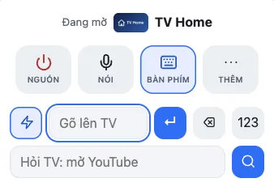
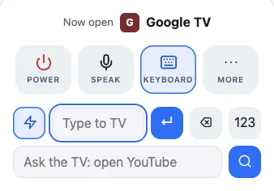
Gõ vào ô Gõ lên TV. Gõ có dấu tiếng Việt thoải mái.Type in the Type to TV box. Accents work.
Bật ⚡ để chữ lên TV ngay khi gõ. Tắt thì gõ xong bấm ↵ để gửi.Turn ⚡ on to send as you type. Off: type, then press ↵.
Dùng ⌫ để xóa, 123 cho bàn phím số.Use ⌫ to delete and 123 for the number pad.
💡 Cần ADB. Gõ vào ô tìm kiếm của app trên TV, nên nhớ chọn ô đó trên TV trước.💡 Needs ADB. It types into the app's search box on the TV, so select that box on the TV first.
📋Clipboard của TV (chữ có dấu, dán chữ)The TV's clipboard (accents, pasting)
Clipboard là chỗ TV giữ chữ vừa sao chép. Dùng để xem chữ trên TV, lấy về máy, hoặc đưa chữ lên TV.The clipboard holds the text the TV last copied. Use it to read it, copy it to your device, or send text to the TV.
Thêm phím → Mở trên TV → Clipboard của TV.More keys → Open on the TV → The TV's clipboard.
Xem chữ TV đang sao chép. Bấm Chép về máy để lấy về.See what the TV copied. Tap Copy here to take it.
Muốn đưa chữ lên TV: gõ chữ, gửi lên, rồi dán vào ô đang gõ trên TV.To send text: type it, send it up, then paste into the box you are typing in on the TV.
💡 Mẹo chữ có dấu: đưa vào clipboard của TV rồi dán. Cần ADB.💡 Accent tip: put the text in the TV's clipboard, then paste. Needs ADB.
🎤Ra lệnh bằng giọng nóiVoice commands
Ô Hỏi TV: mở YouTube (trong ⌨️ Bàn phím) hiểu câu nói thường: gõ rồi bấm 🔍, hoặc bấm Nói để nói.The Ask the TV: open YouTube box (in ⌨️ Keyboard) understands plain sentences: type and tap 🔍, or tap Speak.
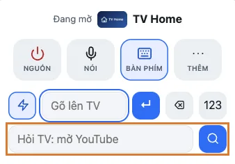
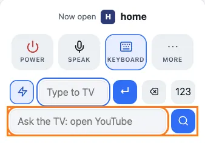
NóiSay
TV làmThe TV does
mở Netflixopen Netflix
Mở app đó.Opens that app.
tắt tiếng · tạm dừng · phátmute · pause · play
Bấm phím tương ứng.Presses that key.
về home · quay lại · bài tiếp · bài trướcgo home · back · next · previous
Điều hướng.Navigates.
tăng âm lượng 5 · giảm âm lượngvolume up 5 · volume down
Đổi âm lượng.Changes volume.
tắt TV · bật TVturn off · turn on
Nguồn.Power.
hẹn giờ tắt 30 phút · hủy hẹn giờsleep in 30 · cancel the timer
Hẹn giờ tắt.Sleep timer.
mở kênh VTV1 · kênh tiếpopen channel BBC News · next channel
💡 Câu nào lạ thì chuyển cho Trợ lý hoặc tìm trên YouTube.💡 Anything else goes to the Assistant or a YouTube search.
💻 App máy tính trên Windows, Linux: 🎤 gửi thẳng giọng bạn tới Trợ lý của TV (TV Android), TV tự nghe.💻 Computer app on Windows, Linux: 🎤 sends your voice straight to the TV's Assistant (Android TVs); the TV does the listening.
🖥️Xem và chạm lên màn hình TVSee and touch the TV's picture
Bạn thấy hình TV ngay trên máy và chạm hay bấm chuột như đang chạm vào TV.You see the TV's picture on your device and tap or click as if touching the TV.
Ở thẻ 🖥️ Màn hình TV, bấm ▶ Xem.In the 🖥️ TV screen card tap ▶ Watch.
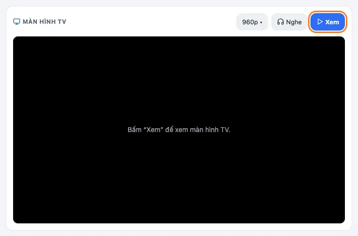
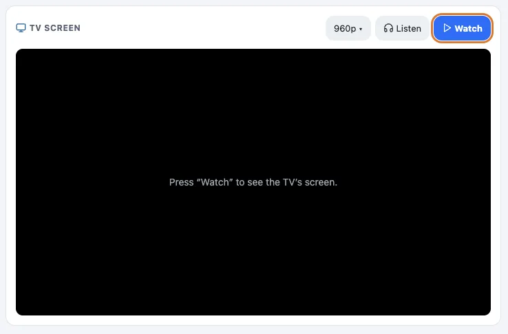
Chạm lên hình để bấm. Kéo để vuốt.Tap the picture to press. Drag to swipe.
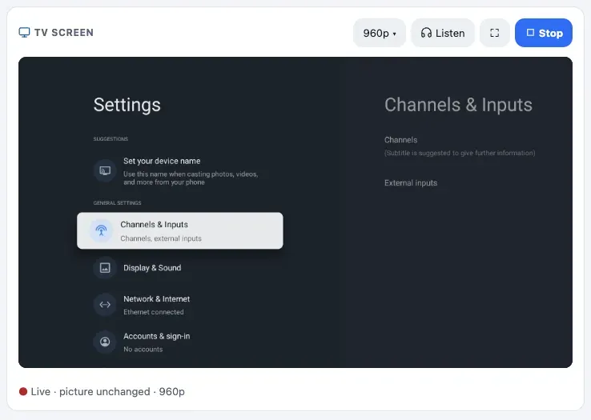
Bấm ⛶ để xem toàn màn hình.Tap ⛶ for full screen.
Trên máy tínhOn a computer
Trên điện thoạiOn a phone
Kết quảResult
Bấm chuộtClick
ChạmTap
Bấm vào chỗ đó trên TVPresses that spot on the TV
Kéo chuộtDrag
VuốtSwipe
Vuốt trên TVSwipes on the TV
Lăn chuộtWheel
Vuốt hai ngónTwo-finger swipe
Cuộn danh sáchScrolls a list
Chuột phảiRight-click
(không có)(none)
Quay lạiBack
💡 Video có bản quyền (Netflix…) hiện màu đen và báo “TV không cho chiếu hình lên đây”. Đây là chủ ý của app đó, không phải lỗi.💡 Protected video (Netflix…) shows black with “the TV does not allow its picture here”. That is the app's choice, not a fault.
💡 Nhiều máy xem cùng lúc được; góc hình hiện 👁 2. Cùng một app máy tính hay trang web của TV thì dùng chung một luồng hình.💡 Several devices can watch at once; the picture shows 👁 2. Browsers on one computer app or TV web page share one stream.
🎧Nghe tiếng TV trên máy bạnListen to the TV on your device
Nghe TV bằng tai nghe của bạn để không làm phiền người khác. Cần TV Android 11 trở lên.Hear the TV in your own headphones without bothering anyone. Needs Android 11 or newer on the TV.
Chọn Cách nghe tiếng TV: Chỉ máy này (loa TV im) hoặc Cả TV và máy này (TV Android 13 trở lên).Pick How to listen: This device only (the TV goes quiet) or TV and this device (TV on Android 13+).
Muốn tiếng đẹp hơn, bấm HQ (160 kbit/s).For nicer sound tap HQ (160 kbit/s).
Tiếng bị giật: bấm Đều. Trễ khoảng nửa giây nhưng không giật.Sound stutters: tap Even. About half a second late, but steady.
💡 Trên app điện thoại, 🎧 vẫn nghe khi tắt màn hình.💡 In the phone app 🎧 keeps playing with the screen off.
⚙️Chất lượng hình và “Nhịp hình”Picture quality and “Frame pace”
Hình giật hoặc mờ? Mở 🖥️ Chất lượng hình từ nút chất lượng cạnh ▶ Xem. Mọi thứ đặt sẵn đã ổn cho đa số TV.Choppy or blurry? Open 🖥️ Picture quality from the quality button next to ▶ Watch. The defaults suit most TVs.
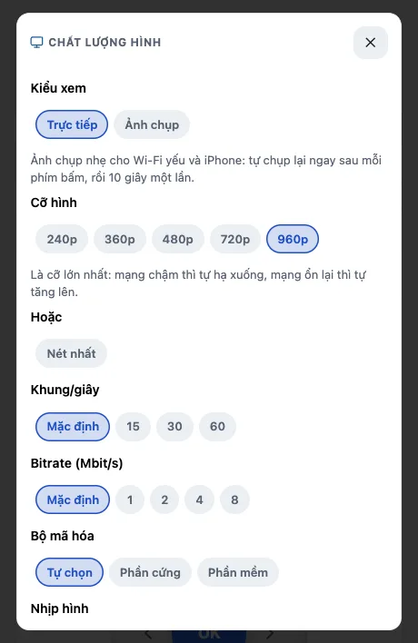
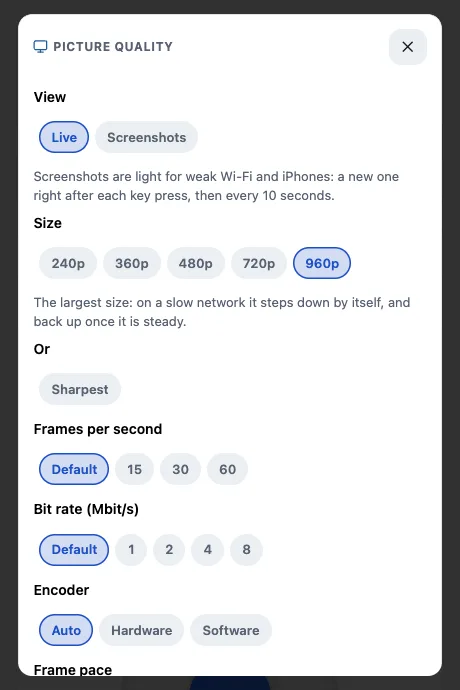
MụcSetting
Dùng khiUse it when
Cỡ hình (240p … 960p)Size (240p … 960p)
Hình giật: chọn nhỏ hơn. Muốn nét: chọn lớn hơn.Choppy: go smaller. Want sharp: go bigger.
Hoặc: Nét nhất / Ảnh chụpOr: Sharpest / Screenshots
Nét nhất chỉ có ở app máy tính.Sharpest is on the computer app only.
Khung/giây · BitrateFrames/s · Bitrate
Mạng yếu: giảm bitrate.Weak network: lower the bitrate.
Bộ mã hóaEncoder
Tự chọn, Phần cứng hoặc Phần mềm. Máy cũ lỗi hình thì thử đổi.Auto, Hardware or Software. Try another if the picture glitches.
Nhịp hìnhFrame pace
Nhanh nhất (mặc định) hiện ngay. Đều hơn thêm khoảng 33 ms để hình mượt đều. Chỉ hiện ở trình duyệt có WebCodecs.Fastest (default) shows at once. Even adds about 33 ms for smoother motion. Only shown in browsers with WebCodecs.
💡 Hình xa nhà (qua Tailscale) giật là bình thường: giảm cỡ hình và bitrate.💡 Choppy picture far from home (over Tailscale) is normal: lower the size and bitrate.
🕹️Dùng tay cầm chơi game làm remoteUse a game controller as the remote
Cắm hoặc nối tay cầm (Xbox, PlayStation…) vào máy đang chạy app là bấm được TV.Plug or pair a controller (Xbox, PlayStation…) into the device running the app and drive the TV.
AB
🕹️ Đã nối tay cầmController connected
OKMở mục đang chọnOpens the selected one
Nối tay cầm (USB hoặc Bluetooth), mở tab 🎮 Remote và bấm một nút bất kỳ. Hiện Đã nối tay cầm là dùng được.Connect the controller (USB or Bluetooth), open the 🎮 Remote tab and press any button. Controller connected means it is ready.
D-pad (hay cần trái) là các mũi tên: ô chọn trên TV đi theo.The D-pad (or left stick) is the arrows: the TV's focus follows.
A là OK: mở mục đang chọn.A is OK: opens what is selected.
B là Quay lại. Các nút khác: bảng dưới.B is Back. The other buttons: the table below.
Tay cầmController
Phím TVTV key
D-pad, cần tráiD-pad, left stick
Mũi tênArrows
A · BA · B
OK · Quay lạiOK · Back
X · YX · Y
Phát/Dừng · Tắt tiếngPlay/Pause · Mute
LB · RBLB · RB
Giảm · tăng âm lượngVolume down · up
LT · RTLT · RT
KênhChannel
Start · SelectStart · Select
Home · MenuHome · Menu
Giữ mũi tên, âm lượng hay kênh thì nó lặp lại. Khi đang xem hình TV, các nút A/B/X/Y, LB/RB, Start/Select đi lên TV như nút tay cầm thật (để chơi game). LT/RT vẫn là phím kênh.Hold an arrow, volume or channel and it repeats. While watching the TV picture, A/B/X/Y, LB/RB and Start/Select go to the TV as real gamepad buttons (to play games). LT/RT stay channel keys.
💡 Tay cầm không làm gì khi bạn đang gõ chữ hoặc đang mở một hộp thoại. Dùng được trên app máy tính, trang web của TV và màn hình remote của app điện thoại.💡 The pad does nothing while you type or a dialog is open. It works in the computer app, the TV's web page and the phone app's remote screen.
Quản lý TVManage the TV
📱Ứng dụng trên TVApps on the TV
Tab 📱 Ứng dụng liệt kê app đã cài. Gõ tên vào ô tìm, hoặc lọc bằng chip: Tất cả, Đang mở, 🚀 Tự chạy, 🔒 Cần giữ, ⏸ Đã tắt.The 📱 Apps tab lists installed apps. Type in the search box or filter with the chips: All, Open now, 🚀 Autostart, 🔒 Must keep, ⏸ Turned off.
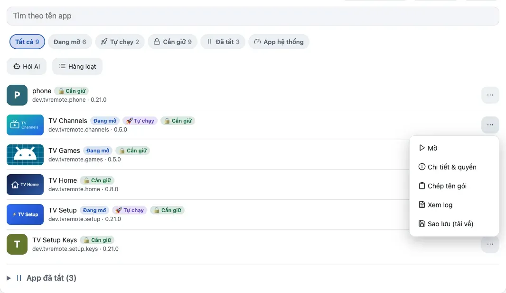
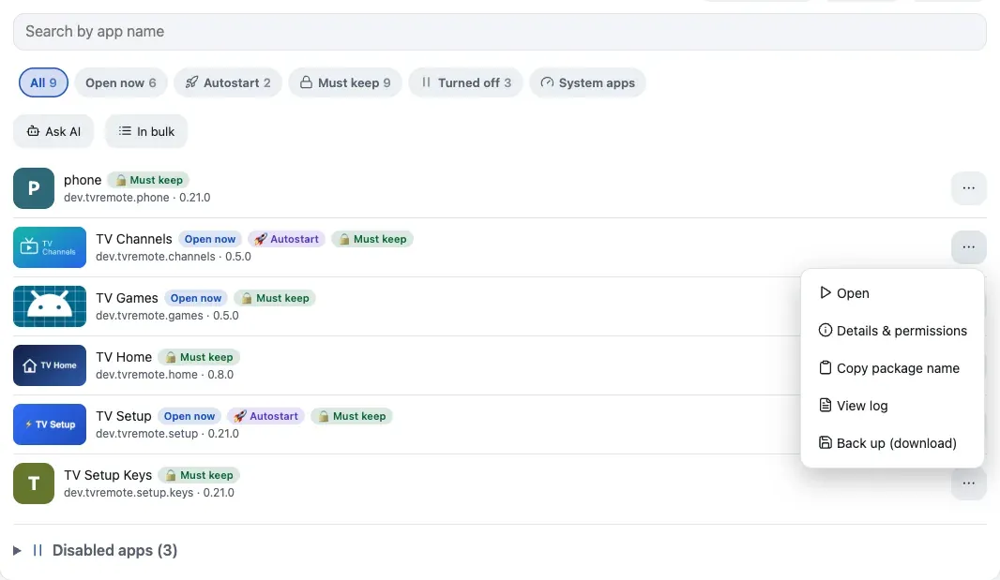
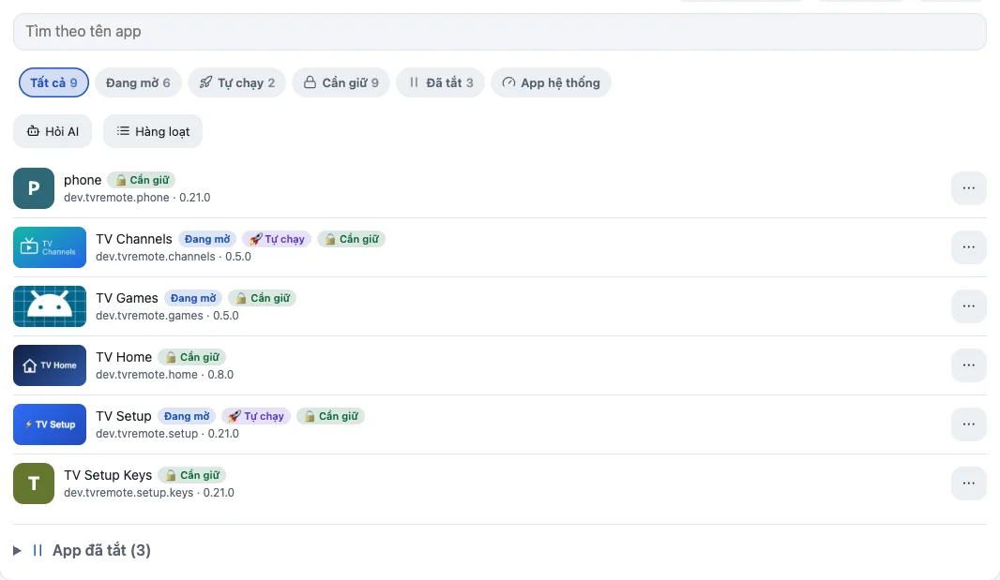
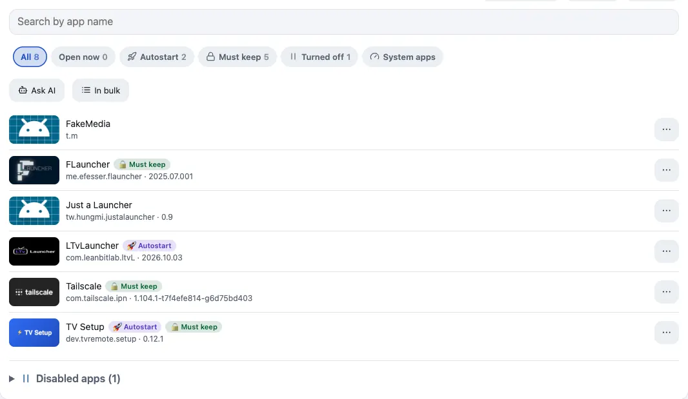
Đang mở: app gần đây, mới nhất trước, kèm RAM.Open now: recent apps, newest first, with their memory.
▶ quay lại app, ✕ đóng app.▶ goes back to an app, ✕ closes it.
Đóng hàng loạt: tích các app cần đóng (app TV cần giữ không đóng được).Close in bulk: tick the apps to close (ones the TV needs can't be).
Bấm ⋯ trên một dòng:Tap ⋯ on a row:
MụcItem
Làm gìWhat it does
Mở · DừngOpen · Stop
Chạy hoặc tắt app.Starts or stops the app.
Chi tiết & quyềnDetails & permissions
Xem quyền app.See the app's permissions.
Sao chép tên góiCopy package name
Dùng cho phím tắt hay cảnh.For shortcuts and scenes.
Dọn, tắt hẳn hoặc gỡ. Tắt thì Bật lại được.Clean, turn off or remove. A disabled app can be turned on again.
Phía trên có: 🧹 Dọn bộ nhớ đệm, 📥 Khôi phục (từ file .tar), ↻ Tải lại, 🤖 Hỏi AI, 📝 Hàng loạt (chọn nhiều app một lúc).At the top: 🧹 Clean caches, 📥 Restore (from a .tar file), ↻ Reload, 🤖 Ask AI, 📝 In bulk (pick many apps at once).
⚠️ Đừng tắt app có 🔒 Cần giữ. TV có thể không lên hình.⚠️ Do not turn off apps marked 🔒 Must keep. The TV may stop working properly.
⚡Tối ưu TV và Hoàn tácOptimize TV and Undo
TV chậm? Tối ưu giúp mở app nhanh hơn. Không gỡ gì cả, và Hoàn tác trả lại như cũ.A slow TV? Optimize makes apps open faster. Nothing is uninstalled, and Undo puts it back.
Vào tab 📺 Thiết lập → thẻ ⚡ Tối ưu TV.Go to the 📺 Setup tab → the ⚡ Optimize TV card.
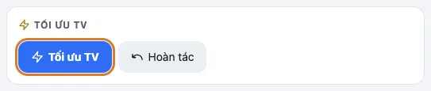
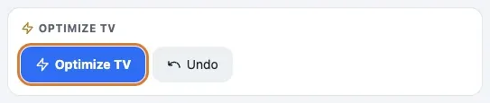
Chọn những gì muốn: Tắt hiệu ứng chuyển cảnh, Dùng TV Home làm màn hình chính, Tắt app đề xuất, Tắt thêm app khác.Choose what you want: Turn off transition animations, Use TV Home as the home screen, Suggested apps to turn off, Turn off other apps.
Bấm ⚡ Chạy tối ưu và xác nhận.Tap ⚡ Run optimize and confirm.
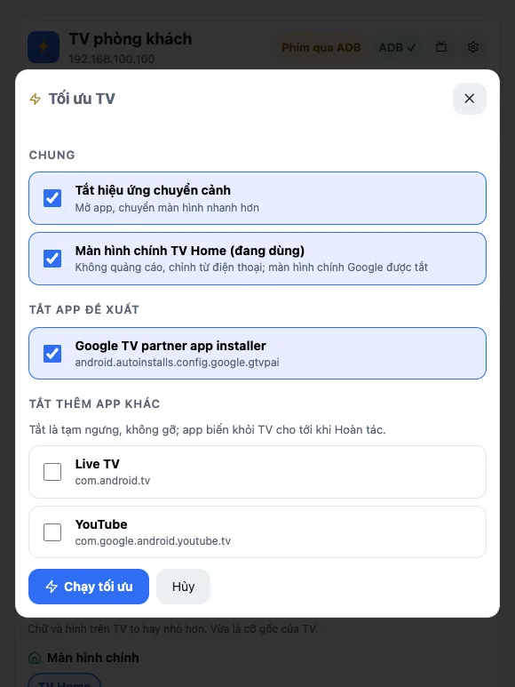
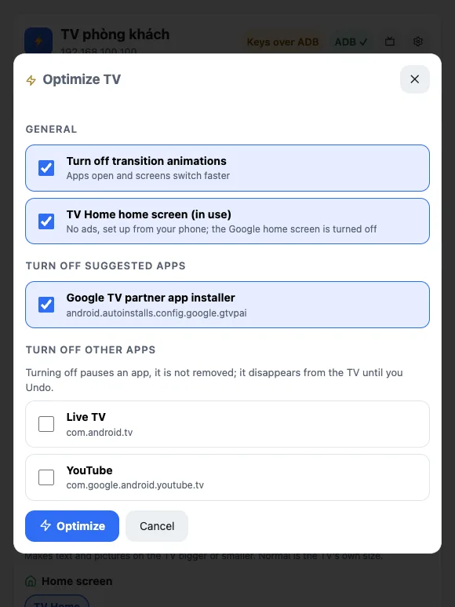
Không ưng? Bấm ↩ Hoàn tác.Not happy? Tap ↩ Undo.
💡 Android TV và Google TV đều đổi được màn hình chính. Sau khi đổi, app kiểm tra nút Home: TV không cho đổi thì màn hình chính cũ được bật lại.💡 Works on Android TV and Google TV. After the swap the app checks where Home goes: if the TV will not allow it, the old home screen comes back on.
💡 Mất màn hình chính sau khi tối ưu? Trên TV: Cài đặt → Ứng dụng → Ứng dụng hệ thống → Android TV Home (hoặc Google TV Home) → Bật.💡 Lost the home screen after optimizing? On the TV: Settings → Apps → System apps → Android TV Home (or Google TV Home) → Enable.
💡 Nút Nguồn vào / YouTube / Netflix trên remote chết sau khi tắt launcher gốc? TV Setup tự bật lại chúng (tắt ở Tối ưu TV > Nút điều khiển).💡 Remote buttons (Input, YouTube, Netflix) dead after the stock launcher is off? TV Setup brings them back (switch off in Optimize TV > Remote buttons).
🛡️ App giữ mạng Wi-Fi đã lưu hoặc cổng HDMI / kênh TV không bao giờ bị tắt, xóa dữ liệu hay gỡ: TV sẽ quên mạng hoặc mất nguồn vào.🛡️ An app that holds a saved Wi-Fi network or the HDMI / TV inputs is never turned off, cleared or removed: the TV would forget the network or lose its inputs.
🔁 Sau khi TV cập nhật firmware, TV Setup tắt lại app đã tắt mà bản cập nhật bật lại, và đặt lại TV Home. Hoàn tác thì dừng.🔁 After a firmware update TV Setup turns the apps Optimize TV had switched off, and the update turned back on, off again (at boot and daily), and puts TV Home back as the home screen. Undo stops it.
💡 Chỉ chạy được trên TV thật, không chạy trên điện thoại hay máy tính bảng.💡 Works on real TVs only, not on phones or tablets.
🏠Thư viện màn hình chínhLauncher gallery
Đổi màn hình chính của TV. Đứng đầu là TV Home, launcher của dự án.Change the TV's home screen. First is TV Home, this project's own.
Thẻ Màn hình chính (hoặc Tối ưu TV > Màn hình chính trên TV) → chọn launcher.The Home screen card (or Optimize TV > Home screen on the TV) → pick a launcher.
Bấm Cài và dùng.Press Install and use.
TV hỏi Giữ: bấm Giữ. Không bấm gì trong 30 giây thì TV về launcher cũ.The TV asks Keep: press it. No answer in 30 seconds: the old launcher comes back.
Về launcher của TV: trả lại launcher gốc bất cứ lúc nào.Back to the TV's own: the original launcher, at any time.
Launcher lỗi hai lần liền: TV Setup tự trả về launcher cũ.A launcher that crashes twice in a row: TV Setup puts the old one back.
Nhãn CH Play: bấm Mở trong CH Play, cài trên TV, rồi Dùng.Tagged Google Play: press Open in Google Play, install on the TV, then Use.
Launcher không có tiếng của TV có nhãn ngôn ngữ nó sẽ hiện (Android 13+: tiếng Anh).A launcher without the TV's language is tagged with the one it shows (Android 13+: English).
Nhiều TV: Nhiều TV > Màn hình chính...Several TVs: Several TVs > Home screen...
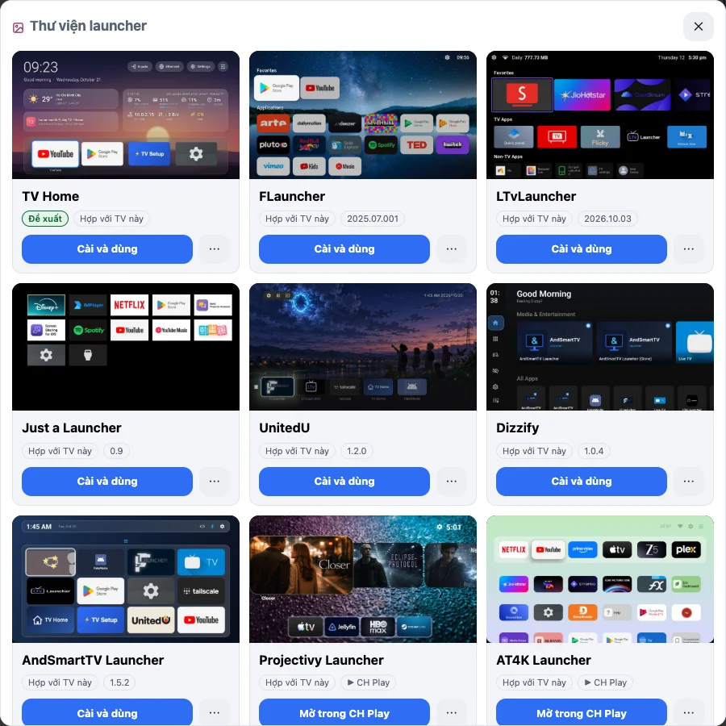
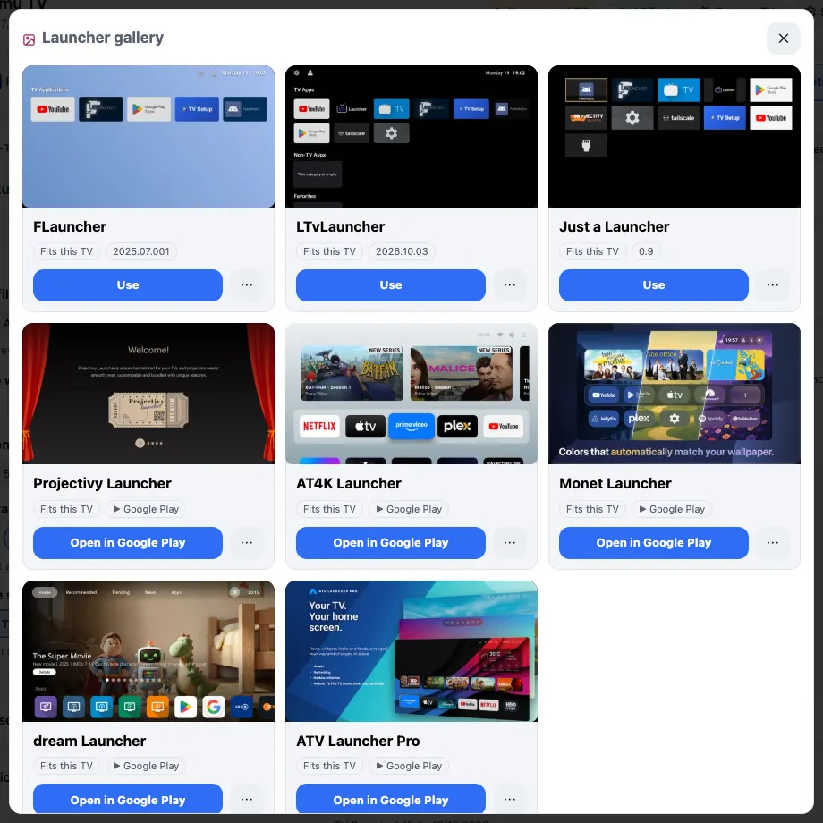
🏠TV Home, màn hình chính của dự ánTV Home, the project's home screen
Màn hình chính không quảng cáo, chỉnh từ điện thoại hoặc máy tính. Cài từ thư viện launcher.A home screen with no ads, set up from the phone or computer. Install it from the launcher gallery.
Tab TV → thẻ Màn hình chính → Tùy chỉnh TV Home.TV tab → Home screen card → Customize TV Home.
App yêu thích: tối đa 6. App ẩn: không hiện trên TV.Favourites: up to 6. Hidden apps: not shown on the TV.
Chọn hình nền và widget. TV đổi ngay.Pick a background and widgets. The TV changes at once.
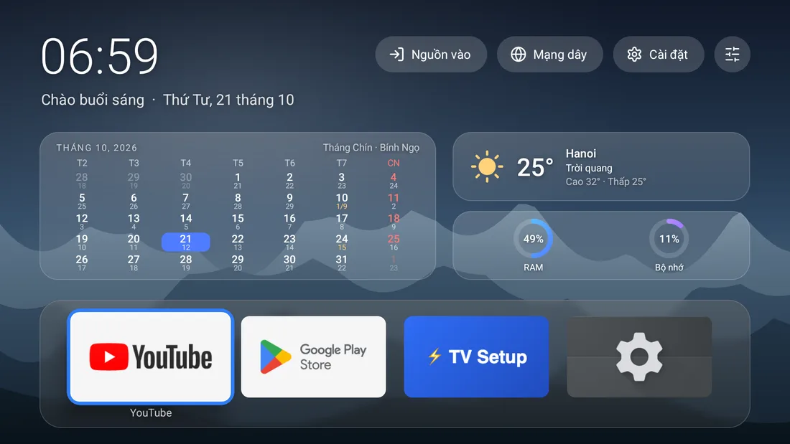
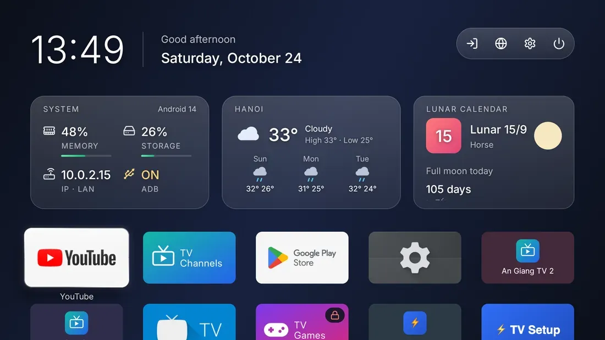
WidgetWidget
Hiện gìShows
Hệ thốngSystem
CPU, RAM, bộ nhớ, IP, tốc độ mạng, ADBCPU, memory, storage, IP, network speed, ADB
Thời tiếtWeather
Nhiệt độ, 3 ngày tới (cần mạng)Temperature, the next 3 days (needs internet)
Lịch âmLunar date
Ngày âm, can chi, còn mấy ngày tới rằm / TếtLunar day, year name, days to full moon / Tết
Lịch thángMonth calendar
Tháng này, hôm nay khoanh đỏ (ngày âm: widget Lịch âm)This month, today circled in red (lunar date: the Lunar date widget)
Có sẵn, không cần mạngBuilt in, no internet needed
BingBing
Ảnh 8 ngày gần nhất; bấm lại ô Bing trên TV = ảnh hôm trướcThe last 8 days' pictures; press the Bing tile again on the TV = the day before
Hình nền đẹpWallpapers
Ảnh NASA, đúng cỡ màn hìnhNASA pictures, sized to the screen
Ảnh của bạnYour photos
Tối đa 10Up to 10
Chọn nhiều hình rồi đặt Đổi hình nền (30 phút → mỗi lần mở) để xoay vòng.Pick several and set Change background (30 min → each open) to rotate them.
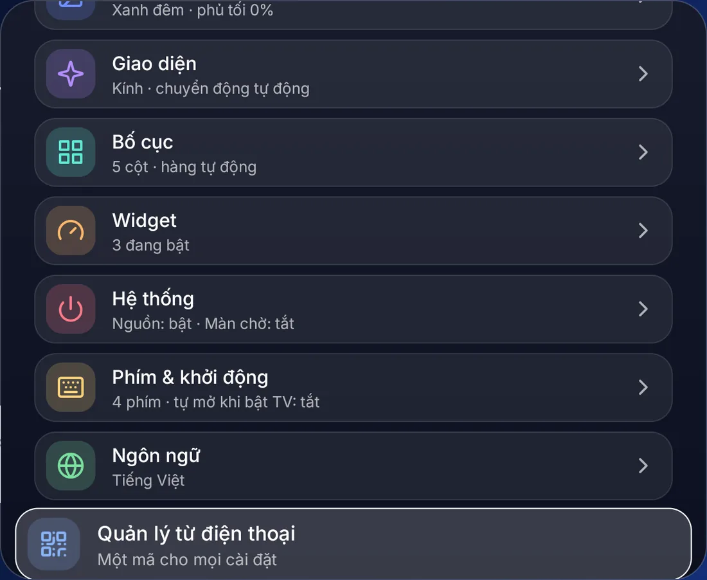
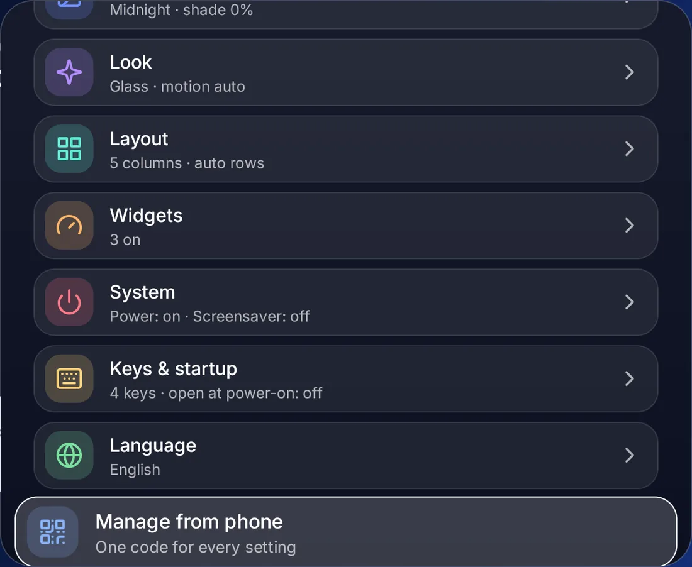
MẹoTips
Trên TV: nút Cài đặt → Tùy chỉnh TV Home, hoặc phím Menu.On the TV: Settings → Customize TV Home, or the Menu key.
Giữ OK trên app: ghim, dời, ẩn.Hold OK on an app: pin, move, hide.
Mỗi widget To hoặc Nhỏ; hai thẻ nhỏ chung một cột.Each widget Big or Small; two small ones share a column.
Ô đang chọn: Kính lướt giữa các app, hoặc Viền xanh.Focus: Glass glides from app to app, or Blue ring.
Mức chuyển động: Tự động (TV ít RAM dùng Nhẹ), Nhẹ, Đầy đủ.Motion level: Auto (Calm on low-memory TVs), Calm, Full.
Bấm Home trong một app: về TV Home, đứng đúng ở app đó.Home pressed in an app: back on TV Home, on that app.
Màn chờ TV Home: đồng hồ lớn và hình nền khi TV rảnh.TV Home screensaver: a big clock and the background while the TV is idle.
App bị khóa có ổ khóa, app có giới hạn hiện ⏳ phút còn lại.A locked app shows a padlock, a limited one ⏳ and the minutes left.
Có bản mới: thẻ hiện Cập nhật TV Home, cài đặt được giữ.A new version: the card shows Update TV Home, settings kept.
Chỉ có remote của TV: cài bằng Downloader, mã 4356026, rồi chọn TV Home khi TV hỏi màn hình chính.Only the TV's remote at hand: install it with Downloader, code 4356026, then pick TV Home when the TV asks for a home screen.
📺TV Channels, kênh truyền hình miễn phíTV Channels, free TV channels
App trên TV phát kênh từ danh sách công khai của iptv-org và các kênh miễn phí của VieON (VTV, HTV, đài tỉnh). Không tài khoản.An app on the TV that plays channels from iptv-org's public lists and VieON's free channels (Vietnam). No account.
Tab TV → thẻ Kênh TV → Cài TV Channels.TV tab → TV channels card → Install TV Channels.
Gõ tên kênh rồi bấm Mở, hoặc nói “mở kênh VTV1”.Type a channel's name and press Open, or say “open channel BBC News”.
Trên TV: ▲▼ đổi kênh, OK hiện danh sách, ▶ hiện chương trình đang chiếu, ▶ lần nữa mở lịch phát sóng. Giữ OK trên một kênh: lịch phát sóng, thêm vào nhóm, ghim ra màn hình chính.On the TV: ▲▼ changes channel, OK shows the list, ▶ shows what is on, ▶ again opens the programme guide. Hold OK on a channel: its guide, add it to a group, pin it to the home screen.
Kênh không phát được thì app tự thử nguồn khác. Một số kênh chỉ xem được trong nước của kênh.A channel that does not play tries its next stream by itself. Some channels play only in their own country.
Chỉ có remote của TV: cài bằng Downloader, mã 8135635.Only the TV's remote at hand: install it with Downloader, code 8135635.
📁Tệp và cài APKFiles and installing APKs
Tab 📁 Tệp là trình quản lý tệp của TV.The 📁 Files tab is the TV's file manager.
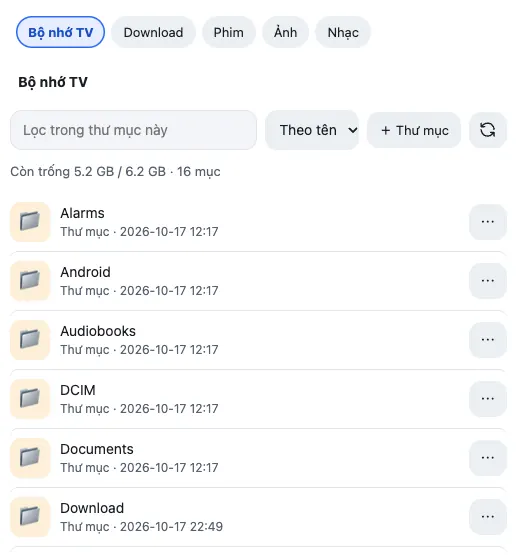
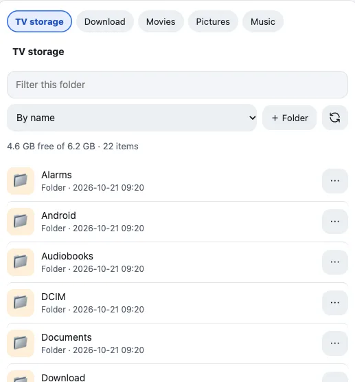
ViệcTask
Cách làmHow
Xem thư mụcBrowse
Bấm vào thư mục. Bấm ＋ Thư mục để tạo mới.Tap a folder. Tap ＋ Folder to make one.
Đưa tệp lên TVSend a file to the TV
Chọn tệp, hoặc kéo thả vào trang.Pick a file, or drag and drop onto the page.
Xem trên TVPlay on the TV
Bấm ▶ TV cạnh tệp.Tap ▶ TV by the file.
Cài APK đã có trên TVInstall an APK already there
Bấm Cài APK này lên TV.Tap Install this APK on the TV.
Tải về máy bạn · Đổi tên · XóaDownload · Rename · Delete
Trong menu ⋯.In the ⋯ menu.
Tải link về TVFetch a link onto the TV
⬇️ Tải file về TV, dán link.⬇️ Download to the TV, paste the link.
Cài APK từ link hoặc tệpInstall an APK from a link or file
📦 Cài APK.📦 Install an APK.
Gõ lệnhRun commands
⌨️ Terminal (cho người rành).⌨️ Terminal (for the technical).
💡 Việc gửi lâu có thanh tiến độ và nút Dừng.💡 Long transfers show progress and a Stop button.
🩺Sức khỏe TVTV health
Tab 🩺 Sức khỏe cho biết TV đang khỏe hay mệt.The 🩺 Health tab shows how the TV is doing.
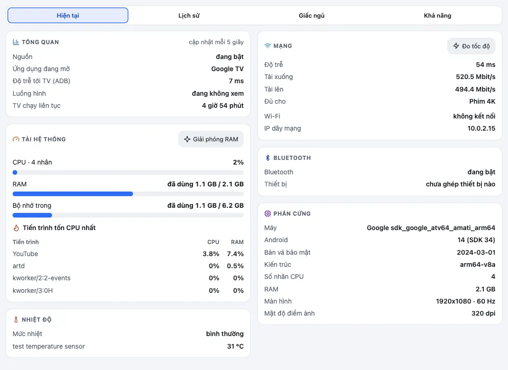
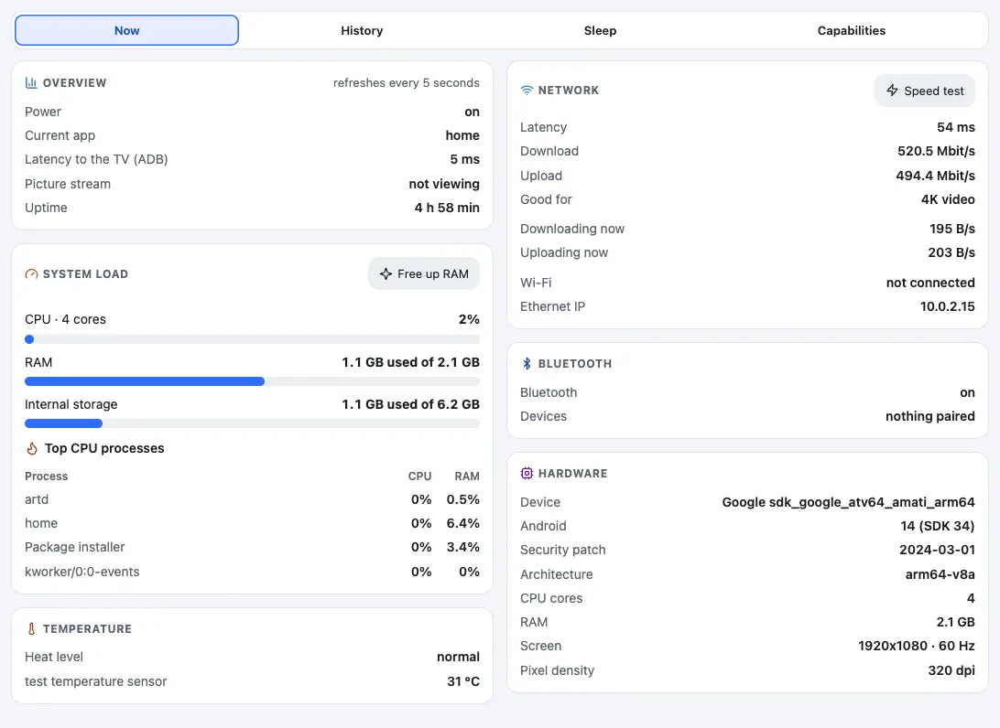
Tab conSub-tab
Cho thấyShows
Hiện tạiNow
Tổng quan (kèm kết quả bảo trì ban đêm 2-5 giờ: dọn cache, tối ưu app hay dùng), tải hệ thống, nhiệt độ, mạng, Bluetooth, phần cứng.Overview (with the night maintenance result, 02:00-05:00: cache trimmed, most-used apps optimised), system load, temperature, network, Bluetooth, hardware.
Lịch sửHistory
Biểu đồ theo thời gian, và app nào hay bị đóng đột ngột.Charts over time, and which apps crash.
Giấc ngủSleep
TV bật hay tắt lúc nào.When the TV was on or off.
Khả năngCapabilities
TV hỗ trợ gì.What the TV supports.
💡 Lịch sử trống (“Chưa có dữ liệu”) trên TV không cho ADB đọc thư mục của TV Setup, như TCL Android 11? Cập nhật TV Setup bản mới nhất: app sẽ hiện nút Cập nhật.💡 History empty (“No data yet”) on a TV that will not let ADB read TV Setup's folder, such as a TCL on Android 11? Update to the newest TV Setup: the app shows an Update button.
Mạng chậm? Bấm ⚡ Đo tốc độ ở thẻ 📶 Mạng: TV tự đo độ trễ, tải xuống, tải lên của chính nó (khoảng 15 giây) và cho biết đủ xem phim 4K, Full HD hay HD.Slow network? Tap ⚡ Speed test on the 📶 Network card: the TV measures its own ping, download and upload (about 15 s) and says whether that is enough for 4K, Full HD or HD.
TV đầy bộ nhớ? Bấm 🧹 Giải phóng RAM, hoặc ⏹ Dừng một app đang chạy trong danh sách.TV low on memory? Tap 🧹 Free up RAM, or ⏹ Stop a running app in the list.
📺Quản lý ngay trên TVManage right on the TV
Không có điện thoại hay máy tính ở gần? Làm ngay trên TV bằng điều khiển của TV.No phone or computer at hand? Do it on the TV itself with the TV's own remote.
Mở TV Setup trên TV.Open TV Setup on the TV.
Chọn Quản lý trên TV.Choose Manage on this TV.
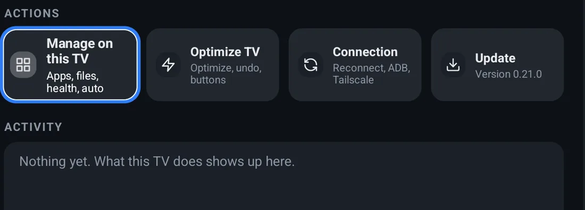
Có các tab Ứng dụng, Tệp, Sức khỏe, Tự động, Thiết lập. Dùng mũi tên và OK để chọn.You get the tabs Apps, Files, Health, Automation and Setup. Use the arrows and OK to choose.
Bấm Quay lại để đóng hay thoát.Press Back to close or leave.
Trong TV Setup còn có: Tối ưu TV / Hoàn tác, Tailscale, Cập nhật, bật tắt remote qua web, và Hủy ghép mọi thiết bị.TV Setup also has: Optimize TV / Undo, Tailscale, Update, a switch for the web remote, and Unpair for every device.
💡 Dùng được cả khi bạn đã tắt remote qua web.💡 It works even when the web remote is switched off.
🛡️TV Setup tự sửa DNS và ADBTV Setup repairs DNS and ADB by itself
TV Setup canh hai chuyện hay làm TV mất kết nối, và tự sửa.TV Setup watches two things that often cut the TV off, and fixes them itself.
Chuyện gìWhat
TV Setup làmTV Setup does
Bộ lọc DNS (thẻ 🛡️ Lọc DNS) ngừng hoạt động: YouTube báo không kết nối được dù TV vẫn có mạngA DNS filter (the 🛡️ DNS filter card) stops working: YouTube says it cannot connect although the TV is online
Kiểm tra định kỳ và khi mạng đổi. Nếu tên miền hỏng mà địa chỉ vẫn trả lời, nó tắt bộ lọc và báo lại ở trang Quản lý.Checks now and then and when the network changes. If names fail while addresses answer, it turns the filter off and tells you on the Manage page.
TV tự tắt Gỡ lỗi ADBThe TV switches ADB debugging off
Bật lại ADB (đã được cấp quyền một lần qua ADB).Switches ADB back on (it was granted the right once through ADB).
💡 Bạn không cần làm gì. Muốn lọc DNS lại, bật lại ở tab Thiết lập (cần Android 9 trở lên).💡 You need to do nothing. To use a DNS filter again, switch it on in the Setup tab (needs Android 9 or newer).
🔋Giữ kết nối khi tắt TVStay reachable when the TV is off
Tắt TV xong, TV có thể ngủ sâu và không trả lời nữa. Tùy chọn này giữ chip thức để bạn vẫn nối được.Once the TV is off it can fall into deep sleep and stop answering. This option keeps the chip awake so you can still connect.
Vào tab 🩺 Sức khỏe → Giấc ngủ.Open 🩺 Health → Sleep.
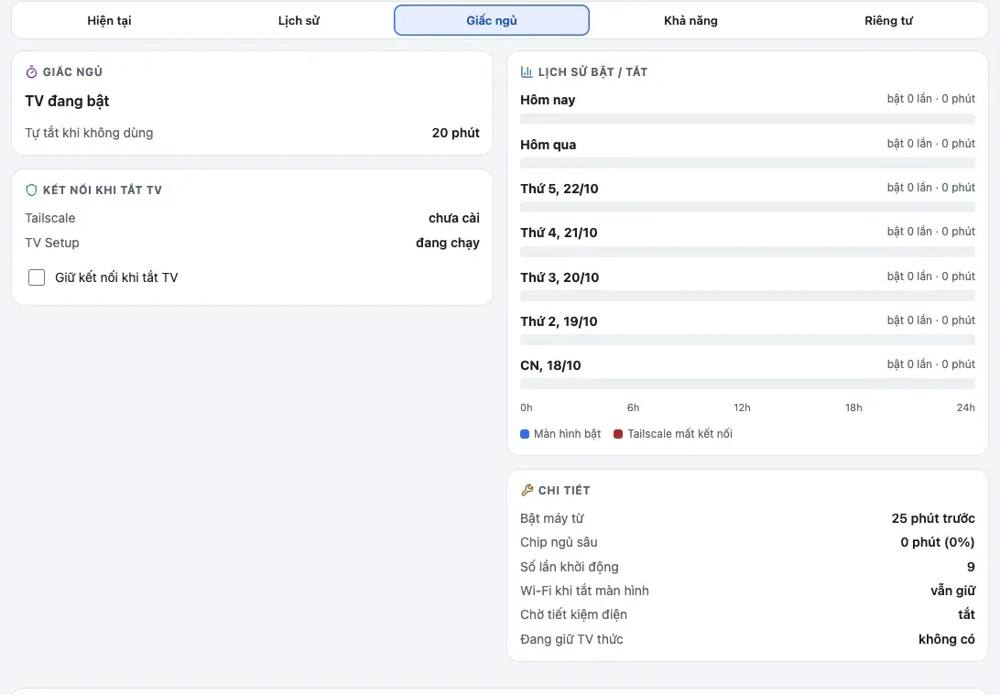
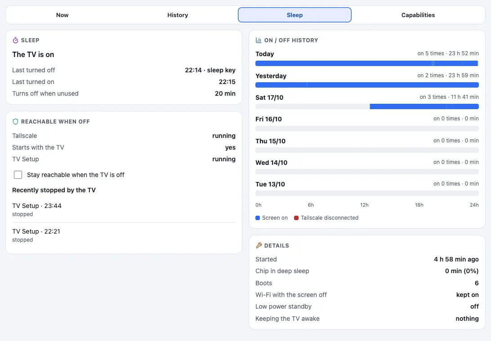
Tích Giữ kết nối khi tắt TV.Tick Stay reachable when the TV is off.
Bỏ tích thì TV lại ngủ sâu như cũ.Untick and the TV sleeps deeply again.
💡 Tốn điện hơn một chút. Cần TV Setup 0.7.1 trở lên. Không có trên TV TCL, vì TV này tự ngủ sâu dù app giữ thế nào.💡 Uses a little more power. Needs TV Setup 0.7.1 or newer. Not offered on TCL TVs, which sleep deeply whatever an app holds.
🔔Gửi thông báo lên TVSend a notification to the TV
Thêm phím → Thông báo (🔔 Gửi thông báo lên TV).More keys → Notify (🔔 Notify the TV).
Gõ tiêu đề (không bắt buộc) và lời nhắn.Type a title (optional) and the message.
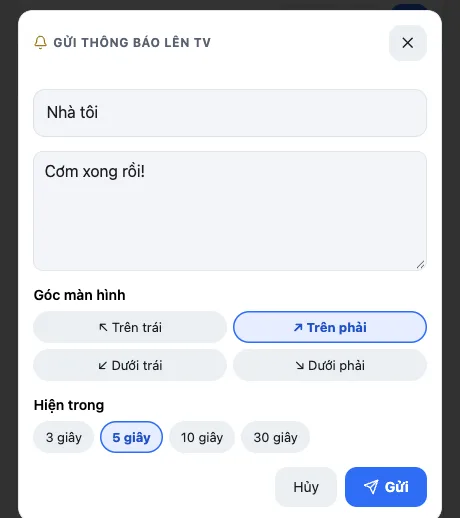
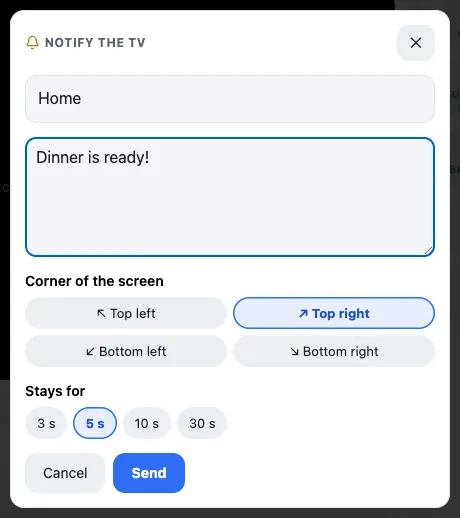
Chọn góc ↖ ↗ ↙ ↘ và số giây: 3, 5, 10 hoặc 30.Pick a corner ↖ ↗ ↙ ↘ and the seconds: 3, 5, 10 or 30.
Bấm Gửi. Một thẻ nhỏ hiện lên TV rồi tự mất.Tap Send. A small card shows on the TV, then goes away.
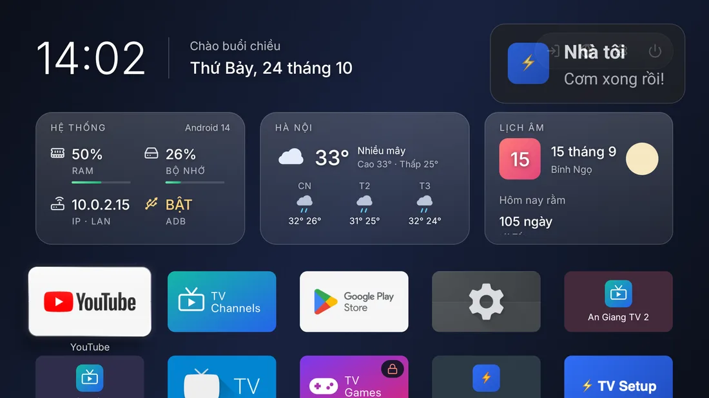
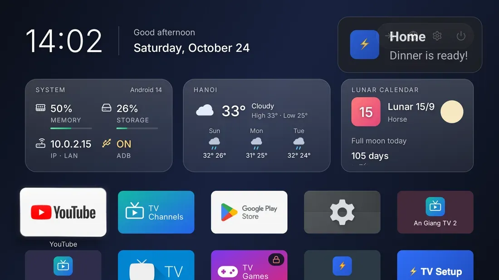
💡 Cần TV Setup bản mới. Nếu thiếu, app sẽ hỏi cập nhật bằng một nút.💡 Needs a recent TV Setup. If it is missing the app asks with one Update button.
✏️Vẽ lên TVDraw on the TV
Bấm ✏️ cạnh hình TV (hoặc Thêm phím → Vẽ lên TV).Tap ✏️ by the picture (or More keys → Draw on the TV).
Chọn màu, rồi vẽ ngón tay lên hình. ↩ hoàn tác nét vừa vẽ.Pick a colour and draw on the picture. ↩ undoes a stroke.
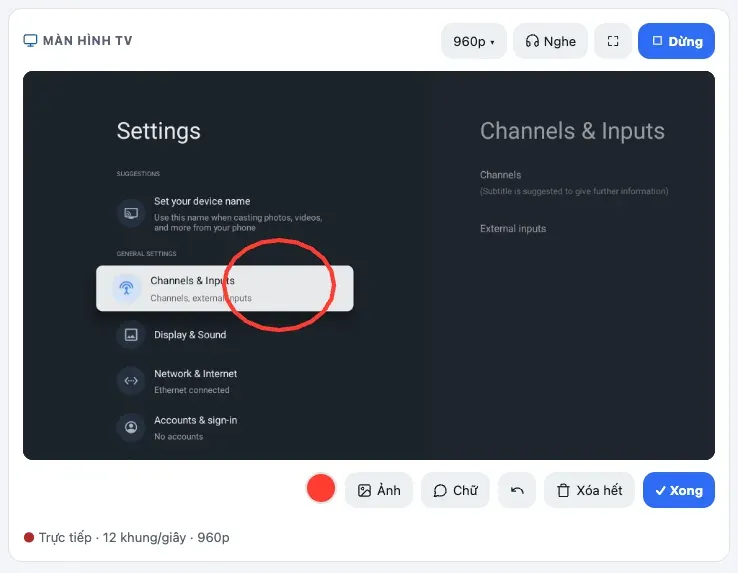
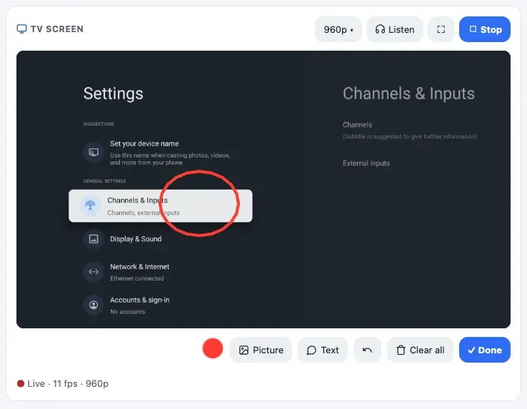
Thêm 💬 Chữ hoặc 🖼️ Ảnh. Với ảnh, chỉnh to nhỏ bằng − / + rồi bấm ✓ Đưa lên TV.Add 💬 Text or a 🖼️ Picture. For a picture, size it with − / + then tap ✓ Put on TV.
Xong bấm ✓ Xong. Muốn xóa: 🗑 Xóa hết.Tap ✓ Done when finished. To clear: 🗑 Clear all.
💡 Nét vẽ nằm trên mọi app và tự mất sau 10 phút. Cần TV Setup.💡 The drawing sits over every app and clears after 10 minutes. Needs TV Setup.
🖼️Đưa ảnh lên TVPut a picture on the TV
Có hai cách: đặt một ảnh phủ lên màn hình TV (trên mọi app), hoặc phát ảnh hay video từ máy.Two ways: lay a picture over the TV's screen (above every app), or play a photo or video from your device.
Bấm ✏️ cạnh hình TV, rồi 🖼️ Ảnh.Tap ✏️ by the picture, then 🖼️ Picture.
Chọn ảnh trong máy.Pick a picture from your device.
Chỉnh to nhỏ bằng − / +. Đổi ý thì bấm Hủy.Size it with − / +. Changed your mind? Tap Cancel.
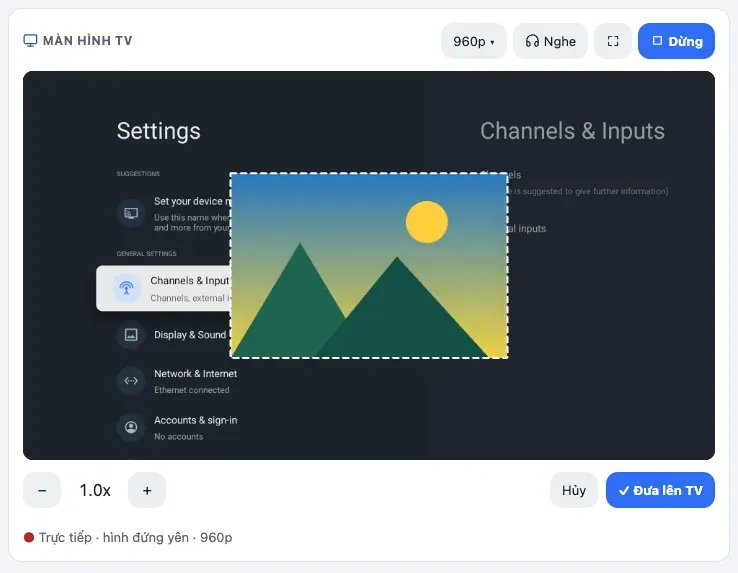
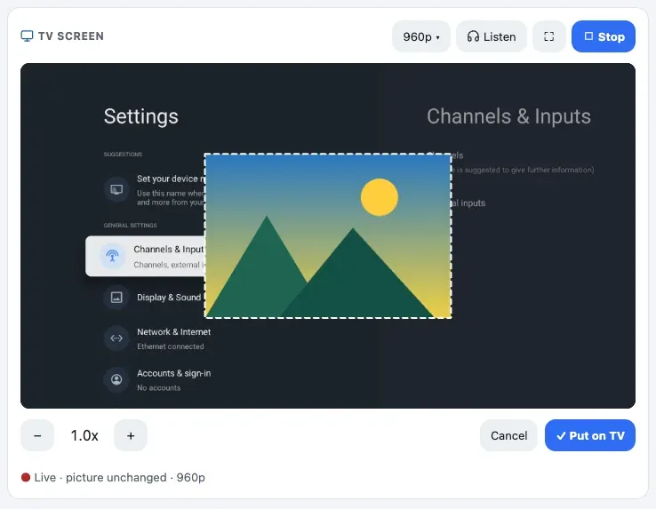
Bấm ✓ Đưa lên TV.Tap ✓ Put on TV.
Muốn phát hẳn: Thêm phím → Mở trên TV → Phát ảnh / video từ điện thoại (trên máy tính: từ máy này).To play it properly: More keys → Open on the TV → Play a photo / video from the phone (on a computer: from this device).
💡 Ảnh phủ tự mất sau 10 phút, hoặc bấm 🗑 Xóa hết. Cần TV Setup (thiếu thì app hỏi cập nhật).💡 The overlay clears after 10 minutes, or tap 🗑 Clear all. Needs TV Setup (if missing the app asks to update).
📸Chụp màn hình TVTV screenshot
Bấm Thêm phím trên tab Remote.Tap More keys on the Remote tab.
Chọn Chụp màn hình.Choose Screenshot.
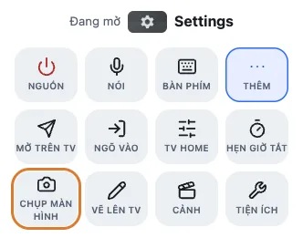
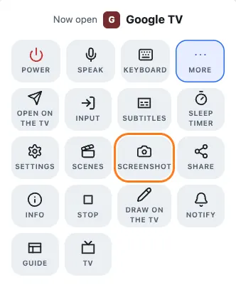
Ảnh lưu về máy bạn, tên như tv-1729512345.png.The picture is saved to your device, named like tv-1729512345.png.
💡 Ứng dụng có bản quyền có thể chụp ra màn hình đen.💡 Protected apps may come out black.
🔅Tắt màn hình, giảm độ sángScreen off, dim the screen
Trong Thêm phím → Hẹn giờ tắt → Màn hình TV:In More keys → Sleep timer → TV screen:
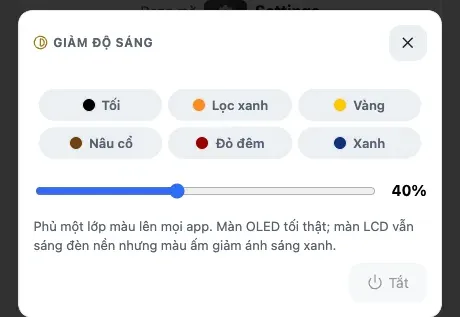
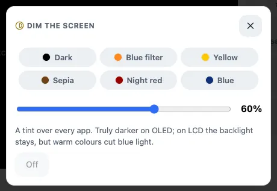
MụcEntry
Làm gìWhat it does
Tắt / bật màn hìnhScreen off / on
Màn hình đen, tiếng vẫn chạy, app vẫn điều khiển được. Bật lại: bấm lần nữa, hoặc bấm remote của TV.The screen goes black; sound plays on and the app still controls the TV. To turn it on: tap again, or press the TV's own remote.
Giảm độ sángDim the screen
Phủ màu lên mọi app: Tối, Lọc xanh, Vàng, Nâu cổ, Đỏ đêm, Xanh, độ mạnh 5 đến 90%. Giữ tới khi bấm Tắt.A tint over every app: Dark, Blue filter, Yellow, Sepia, Night red, Blue, at 5 to 90%. Stays until you tap Off.
💡 Giảm độ sáng tối thật trên màn OLED; màn LCD vẫn sáng đèn nền nhưng màu ấm vẫn bớt ánh sáng xanh. Cần TV Setup.💡 Dimming is truly darker on OLED; an LCD keeps its backlight, but warm colours still cut blue light. Needs TV Setup.
Tự độngAutomation
😴Hẹn giờ tắt TVSleep timer
Bấm Thêm phím → Hẹn giờ tắt, hoặc vào tab ⏰ Tự động → 😴 Hẹn giờ tắt TV.Tap More keys → Sleep timer, or open ⏰ Automation → 😴 Sleep timer.
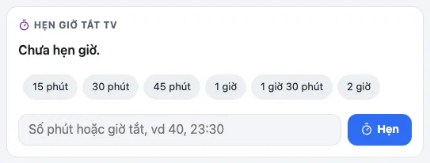
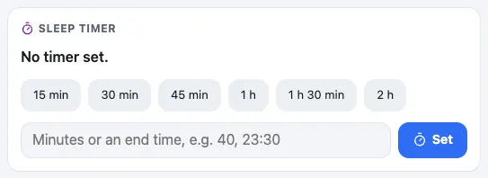
Chọn 30 phút, 1 giờ hay 2 giờ. Mốc khác (15p, 45p, 1g30) và Tự chọn… (số phút hay giờ như 23:30) nằm trong Thời gian khác.Pick 30 minutes, 1 hour or 2 hours. Other lengths (15 min, 45 min, 1h30) and Custom… (minutes or a time like 23:30) are under Other times.
Muốn nghe tiếp nhạc: Màn hình TV → Tắt / bật màn hình. Phím đầu tiên trên remote của TV chỉ bật lại màn hình, không mở app đang chọn.To keep listening: TV screen → Screen off / on. The first key on the TV's remote only turns the screen back on; it does not open the app in focus.
Hủy bằng Hủy hẹn giờ. Cần thêm giờ: 15 phút nữa.Cancel with Cancel the timer. Want more time: 15 more minutes.
💡 Hẹn giờ nằm trên TV, nên vẫn chạy khi điện thoại đã tắt.💡 The timer lives on the TV, so it runs even when your phone is off.
🌙Giờ đi ngủBedtime
Tab ⏰ Tự động → 🌙 Giờ đi ngủ.Tab ⏰ Automation → 🌙 Bedtime.
Bấm Thêm giờ đi ngủ, chọn giờ bắt đầu và kết thúc.Tap Add a bedtime and choose the start and end.
Lưu. Trong khoảng đó, nếu ai bật TV, TV báo trước rồi tự tắt sau 1 phút.Save. In that window, if anyone turns the TV on, it warns first and goes off a minute later.
💡 Cần TV Setup trên TV. Việc tắt do chính TV làm.💡 Needs TV Setup on the TV. The TV does the turning off itself.
🏠Màn hình chàoWelcome screen
Tab ⏰ Tự động → 🏠 Màn hình chào, bấm Chọn video hoặc ảnh (mp4, webm, mkv, jpg, png, webp; tối đa 200 MB).Tab ⏰ Automation → 🏠 Welcome screen, tap Choose a video or picture (mp4, webm, mkv, jpg, png, webp; 200 MB at most).
Chọn Mỗi lần bật TV hoặc Sau khi khởi động lại; với ảnh, chọn số giây. Bấm Xem thử trên TV để xem ngay.Choose Every time it is on or After a restart; for a picture, the seconds. Tap Show now to see it at once.
Mỗi lần bật TV, màn hình chào hiện lên. Bấm phím bất kỳ để tắt. Nhiều TV: 📦 Nhiều TV cùng lúc → ⋯ → Đặt màn hình chào.Each time the TV turns on, the welcome screen shows. Any key closes it. Several TVs: 📦 Several TVs at once → ⋯ → Set welcome screen.
💡 Cần TV Setup mới (0.12.0 trở lên). Không hiện lại trong 2 phút. Việc hiện do chính TV làm.💡 Needs a newer TV Setup (0.12.0 or later). Not shown again within 2 minutes. The TV does the showing itself.
⏳Giới hạn app, âm lượng, RAMApp, volume and memory limits
Tab ⏰ Tự động → ⏳ Giới hạn app mỗi ngày.Tab ⏰ Automation → ⏳ Daily app limits.
Bấm Thêm giới hạn app, chọn app và số phút mỗi ngày (30 phút đến 4 giờ).Tap Add an app limit, pick the app and minutes per day (30 min to 4 h).
Hết giờ, TV báo trước rồi đóng app đó.When time is up the TV warns, then closes that app.
+30p cho app thêm 30 phút hôm nay; Đặt lại bỏ phần cho thêm.+30 min gives the app 30 more minutes today; Reset takes them back.
ThẻCard
Làm gìWhat it does
🔊 Giới hạn âm lượng🔊 Volume limits
Theo giờ, tối đa 10 đến 90%, cho loa TV. Không chạy nếu dùng loa HDMI ngoài, hay khi đang nghe tiếng TV qua 🎧 (loa TV im khi đó).By time, max 10 to 90%, for the TV's speakers. Does not work with an external HDMI speaker, nor while 🎧 plays the TV's sound elsewhere (its speakers are silent then).
🧹 Báo khi RAM đầy🧹 Full memory notice
Báo khi RAM đạt 80 đến 95%. Mặc định tắt.Warns at 80 to 95% memory. Off by default.
💡 Tất cả nằm trên TV và cần TV Setup. TV ngủ hay máy bạn tắt vẫn có hiệu lực.💡 All of it lives on the TV and needs TV Setup. It holds even with your device off.
🔒Khóa app bằng mã PINLock apps with a PIN
Tab ⏰ Tự động → 🔒 Khóa app bằng mã PIN, bấm ＋ Thêm.Tab ⏰ Automation → 🔒 Lock apps with a PIN, tap ＋ Add.
Chọn app. Lần đầu thì đặt thêm mã PIN 4 đến 8 chữ số.Pick the app. The first time, also set a PIN of 4 to 8 digits.
Mở app đó trên TV: TV hỏi PIN. Nhập bằng phím số của remote hoặc bàn phím trên màn hình.Open that app on the TV: it asks for the PIN. Type it with the remote's number keys or the keypad on screen.
Đã mở khóa thì dùng tới khi sang app khác hoặc TV tắt; mở lại là hỏi lại. Sai 5 lần: chờ 1 phút.Once unlocked it stays open until another app comes up or the TV turns off; opening it again asks again. 5 wrong PINs: a minute's wait.
💡 Cần TV Setup. Mã PIN chỉ lưu trên TV (dạng băm), không gửi đi đâu.💡 Needs TV Setup. The PIN is kept only on the TV (hashed), never sent anywhere.
🎬Cảnh (một nút làm nhiều việc)Scenes (one tap, many steps)
Một cảnh là chuỗi việc chạy một lần bấm. Ví dụ “Xem phim”: bật TV, mở Netflix, đặt âm lượng 20.A scene is a chain of steps run with one tap. For example “Movie”: turn on the TV, open Netflix, set volume 20.
Tab ⏰ Tự động → 🎬 Cảnh → ＋ Tạo cảnh.Tab ⏰ Automation → 🎬 Scenes → ＋ New scene.
Đặt tên và biểu tượng.Name it and pick an icon.
Bấm ＋ Thêm bước và chọn loại bước (bảng dưới).Tap ＋ Add step and choose a kind (table below).
Bấm ▶ Thử để chạy thử, 💾 Lưu để giữ.Tap ▶ Try to test, 💾 Save to keep.
BướcStep
Làm gìWhat
Bật TV · Tắt TVTurn the TV on · off
Nguồn.Power.
Mở app · Mở linkOpen an app · a link
Chạy app hay link trên TV.Starts an app or link on the TV.
Đặt âm lượng · Bấm phímSet the volume · Press a key
Đặt mức hay bấm phím.Sets a level or presses a key.
Chuyển ngõ vàoSwitch input
HDMI hay nguồn khác.HDMI or another source.
ChờWait
Đợi vài giây giữa hai bước.Waits a few seconds between steps.
Hẹn giờ tắt · Gửi thông báoSleep timer · Send a notification
Như các tính năng riêng.Like the separate features.
Chạy cảnh từ Thêm phím → Cảnh, bằng giọng nói (nói tên cảnh), hoặc widget, ô Cài đặt nhanh, phím tắt trên điện thoại.Run a scene from More keys → Scenes, by voice (say its name), or from the phone's widget, Quick Settings tile or shortcut.
Sao lưu: ⬇️ Xuất file sao lưu và ⬆️ Nhập từ file.Back up with ⬇️ Export a backup file and ⬆️ Import from a file.
Cho iPhone Phím tắt, Siri hay Home Assistant điều khiển TV bằng một đường link.Let iPhone Shortcuts, Siri or Home Assistant control the TV with one link.
🏠 Home Assistant
Cho dùngOn
…8765/api/hook?k=…&key=HOME
📋 Sao chépCopy
⚡ Phím tắtShortcuts
Lấy nội dung của URLGet contents of URL
…/api/hook?k=…&key=HOME
▶
Đã chépCopied
▶ Netflix
🏠 Home
App máy tính hoặc trang web của TV (xem “iPhone”) → nút 🛠️ Cài đặt ở trên. App điện thoại không có.The computer app or the TV web page (see “iPhone”) → 🛠️ Settings at the top. Not in the phone app.
Thẻ Home Assistant · Phím tắt → Cho dùng.The Home Assistant · Shortcuts card → On.
Địa chỉ TV và cổng, k= là mã bí mật, key=HOME là việc cần làm. Mở link trong trình duyệt để thử.The TV's address and port, k= the secret token, key=HOME what to do. Open it in a browser to try.
iPhone: Phím tắt và SiriiPhone: Shortcuts and Siri
Gửi link sang iPhone (Ghi chú, AirDrop), hoặc chép từ trang web của TV mở trong Safari.Get the link to the iPhone (Notes, AirDrop), or copy it from the TV web page in Safari.
Chọn Lấy nội dung của URL, dán link vào ô URL (giữ GET).Pick Get contents of URL, paste the link in URL (keep GET).
Đặt tên (vd “TV Home”), bấm Xong.Name it (e.g. “TV Home”), tap Done.
Nói “Hey Siri, tên phím tắt” hoặc bấm phím tắt. iPhone cùng Wi-Fi với TV; lần đầu chọn Cho phép mạng cục bộ.Say “Hey Siri, shortcut name” or tap it. Same Wi-Fi as the TV; the first time, Allow the local network.
Home Assistant
Bấm 📋 YAML cho Home Assistant.Tap 📋 YAML for Home Assistant.
Mở configuration.yaml (add-on File editor), dán vào cuối tệp, lưu:Open configuration.yaml (the File editor add-on), paste at the end, save:
Khởi động lại (Công cụ nhà phát triển → YAML → Khởi động lại).Restart (Developer tools → YAML → Restart).
Dùng trong script hay automation. Bấm Home:Use it in a script or automation. Press Home:
action: rest_command.tv_key
data:
key: HOME
Mở app / chạy cảnh: chép khối tv_key thành tv_app, đổi payload thành '{"app": "{{ app }}"}' hoặc '{"scene": "{{ scene }}"}'.Open an app / run a scene: copy the tv_key block as tv_app, change payload to '{"app": "{{ app }}"}' or '{"scene": "{{ scene }}"}'.
Đổi đuôi link để làm việc khác (khoảng trắng viết %20):Change the end of the link to do something else (a space is %20):
Thêm vào linkAdd to the link
TV làmThe TV does
key=HOMEkey=HOME
Bấm một phím (HOME, OK, BACK, MUTE…).Presses a key (HOME, OK, BACK, MUTE…).
app=com.netflix.ninjaapp=com.netflix.ninja
Mở app theo tên gói.Opens an app by package name.
scene=Xem phimscene=Movie
Chạy một cảnh.Runs a scene.
text=xin chàotext=hello
Gõ chữ.Types text.
volume=20 / up / down / mutevolume=20 / up / down / mute
Đặt âm lượng (0 đến 100) hoặc tăng, giảm, tắt tiếng.Sets volume (0 to 100), or up, down, mute.
power=on / off / togglepower=on / off / toggle
Bật, tắt hay đổi trạng thái.On, off or toggle.
/api/hook/state/api/hook/state
Chỉ đọc: TV đang bật không, đang chạy gì.Read only: is the TV on, what is playing.
Home Assistant gửi mã qua header x-tvr-hook, không lộ trong log.Home Assistant sends the token in the x-tvr-hook header, out of the logs.
Chạy ở đâuWhere it runs
CổngPort
TV Setup (nên dùng, vì TV luôn bật)TV Setup (recommended, the TV is always on)
87658765
App máy tính (chỉ mở khi bật)Computer app (opens only while on)
87668766
⚠️ Link là chìa khóa. Lộ thì bấm 🔄 Đổi mã mới, link cũ chết ngay.⚠️ The link is a key. If it leaks tap 🔄 New token: the old one dies at once.
💡 Chỉ trong mạng nhà; ở xa dùng Tailscale.💡 Home network only; away from home use Tailscale.
Thêm nữaMore
📦Nhiều TV cùng lúcSeveral TVs
Lưu từng TV: nối vào TV một lần, nó nằm trong 💾 TV đã lưu.Save each TV: connect once and it stays in 💾 Saved TVs.
Đổi TV bằng 📺 Đổi TV.Switch with 📺 Change TV.
Cần làm cho nhiều TV: mở 📦 Nhiều TV cùng lúc, tích các TV rồi chọn 📦 Cài APK hoặc 🔁 Khởi động lại.To act on many: open 📦 Several TVs at once, tick the TVs, then choose 📦 Install APK or 🔁 Restart.
💡 App điện thoại có danh sách TV với cùng các nút.💡 The phone app has the same on its TV list.
👁️Xem tình trạng mọi TVSee every TV at a glance
Mỗi TV đã dùng có một dòng: Đang bật, Chế độ chờ hoặc Không thấy TV, kèm kiểu máy và app đang mở. Tự làm mới 10 giây một lần.Each saved TV has a line: On, Standby or No answer, with its model and the app open. It refreshes every 10 seconds.
Xem màn hình (mặc định tắt): ảnh nhỏ của từng TV, 5 giây một lần. LG, Samsung, Roku và TV không ADB không có ảnh.Show screens (off by default): a small picture of each TV every 5 seconds. LG, Samsung, Roku and TVs without ADB have none.
📲Chia sẻ cho người khácShare with others
Thêm phím → 📲 Chia sẻ.More keys → 📲 Share.
Chọn 📺 Chia sẻ TV: hiện mã QR dùng một lần, hết hạn sau 10 phút.Choose 📺 Share the TV: a one-time QR that expires in 10 minutes.
Người kia (cùng Wi-Fi) quét QR là dùng được remote.The other person (same Wi-Fi) scans it and can use the remote.
Muốn họ có app: chọn 📱 Chia sẻ app.To give them the app: choose 📱 Share the app.
QuyềnAccess
Được làmCan do
🛡️ Toàn quyền🛡️ Full access
Mọi thứ, kể cả Quản lý.Everything, Manage included.
🎮 Chỉ remote🎮 Remote only
Phím, gõ chữ, hình, mở app, hẹn giờ, chạy cảnh. Không có Quản lý.Keys, typing, picture, opening apps, sleep timer, saved scenes. No Manage.
👁️ Chỉ xem👁️ View only
Xem hình và đang phát gì.The picture and what is playing.
💡 Đổi hay thu hồi quyền ở Thiết lập → 📱 Thiết bị đã ghép (Hủy ghép hoặc Gỡ tất cả).💡 Change or revoke in Setup → 📱 Paired devices (Unpair or Unpair all).
🌐Điều khiển khi không ở nhà (Tailscale)Away from home (Tailscale)
Tailscale là mạng riêng miễn phí nối các thiết bị của bạn. Không mở cổng ra Internet.Tailscale is a free private network joining your devices. No ports opened to the Internet.
Tab 📺 Thiết lập → 🌐 Tailscale, bấm ⚡ Cài và đăng nhập Tailscale.Tab 📺 Setup → 🌐 Tailscale, tap ⚡ Install and sign in to Tailscale.
Chờ khoảng nửa phút, bấm 🔑 Mở trang đăng nhập Tailscale và chọn Connect.Wait about half a minute, tap 🔑 Open the Tailscale sign-in page and choose Connect.
Trong trang quản trị Tailscale, Disable key expiry cho TV để khỏi mất kết nối.In the Tailscale admin page choose Disable key expiry for the TV so it never drops.
Cài Tailscale trên máy bạn, đăng nhập cùng tài khoản.Install Tailscale on your device and sign in to the same account.
Kết nối tới địa chỉ 100.x.x.x của TV.Connect to the TV's 100.x.x.x address.
TV đang ngủ nhẹ thì phím Nguồn đánh thức được, cả qua Tailscale. TV tắt hẳn thì phải Wake-on-LAN từ trong nhà.A dozing TV wakes with Power, even over Tailscale. A fully off TV needs Wake-on-LAN from inside the home network.
📡TV LG, Samsung, Roku, VIDAALG, Samsung, Roku, VIDAA TVs
Thử nghiệm (beta). Chỉ có trong app điện thoại và app máy tính.Beta. Only in the phone app and the computer app.
Bật TV và nối cùng Wi-Fi.Turn the TV on and join the same Wi-Fi.
Quét mạng, chọn TV.Scan, pick the TV.
TV hỏi cho phép thì chọn Cho phép (VIDAA hỏi mã 4 số).If the TV asks to allow, choose Allow (VIDAA asks a 4-digit code).
LGLG
SamsungSamsung
RokuRoku
VIDAAVIDAA
Phím, gõ chữ, mở app, bật TV, cảnhKeys, typing, apps, power on, scenes
✓✓
✓✓
✓✓
✓✓
Chuyển ngõ vàoSwitch input
✓✓
✓✓
✓✓
Âm lượng theo sốVolume to a number
✓✓
✓✓
Link YouTube · tắt màn hìnhYouTube links · screen off
✓✓
💡 Xem hình, tệp, quản lý app chỉ có ở Android TV. TV lạ cư xử sai: Giới thiệu → 📋 Gửi nhật ký.💡 Picture, files and app management are Android TV only. If a TV misbehaves: About → 📋 Send the log.
✨Chỉ có trên app điện thoạiPhone app extras
Tính năngFeature
Cách dùngHow
Phím âm lượng của điện thoạiThe phone's volume keys
Chỉnh âm lượng TV.Change the TV's volume.
Widget · ô Cài đặt nhanh · phím tắtWidget · Quick Settings tile · shortcuts
Chạm là bấm phím hay chạy cảnh, không cần mở app.One tap presses a key or runs a scene without opening the app.
🎧 Nghe🎧 Listen
Vẫn nghe khi tắt màn hình.Keeps going with the screen off.
Phản chiếu màn hình điện thoại lên TVMirror the phone to the TV
Mở trên TV → Chiếu màn hình điện thoại lên TV.Open on the TV → Mirror the phone’s screen on the TV.
🩺Tự kiểm tra khi không kết nối đượcThe self-check when it will not connect
Không kết nối được? App tự kiểm tra trong chưa đầy 4 giây rồi nói một kết luận kèm cách sửa. Bạn không cần đoán.Cannot connect? The app checks by itself in under 4 seconds and gives one conclusion with the fix. No guessing.
App nóiThe app says
Cách sửaThe fix
TV không trả lờiThe TV is not answering
TV tắt hẳn hoặc ngủ sâu. Bật TV rồi bấm 🔄 Thử lại.The TV is off or asleep. Turn it on, then tap 🔄 Try again.
TV đã đổi địa chỉThe TV has a new address
Bấm nút 📍 Dùng địa chỉ ….Tap 📍 Use the address ….
TV này chỉ có Gỡ lỗi không dâyThis TV only has Wireless debugging
Ghép một lần bằng mã 6 số: Tùy chọn nhà phát triển → Gỡ lỗi không dây → Ghép nối bằng mã.Pair once with the 6-digit code: Developer options → Wireless debugging → Pair with pairing code.
Gỡ lỗi ADB đang tắt trên TVADB debugging is off on the TV
Phím vẫn bấm được. Muốn xem hình, mở app thì bấm 🧭 Bật ADB giúp tôi hoặc bật trong Tùy chọn nhà phát triển.Keys still work. For picture and apps tap 🧭 Turn ADB on for me or switch it on in Developer options.
TV đang chờ bạn cho phépThe TV is waiting for you to allow
Nhìn lên TV: tích “Luôn cho phép”, chọn OK.Look at the TV: tick “Always allow”, choose OK.
Máy này đang ở mạng khác với TVThis device is on another network than the TV
Nối vào đúng Wi-Fi của TV, không phải mạng khách hay 4G.Join the TV's own Wi-Fi, not a guest network or mobile data.
Máy này chưa vào Wi-FiThis device is not on Wi-Fi
Bật Wi-Fi.Turn Wi-Fi on.
Tailscale đang tắt trên máy nàyTailscale is off on this device
Bật Tailscale rồi thử lại.Turn Tailscale on, then try again.
VPN đang chặn đường tới TVA VPN is in the way
Trong app VPN bật cho phép mạng LAN (Local network), hoặc tắt VPN.In the VPN app allow the local network (LAN), or turn the VPN off.
Ngày giờ trên TV đang saiThe TV's date and time are wrong
Trên TV: Cài đặt → Hệ thống → Ngày và giờ, bật tự động. Đồng hồ sai làm kết nối bảo mật bị từ chối.On the TV: Settings → System → Date & time, set automatic. A wrong clock makes the secure connection fail.
TV đang bật mạng nhưng chưa nhận lệnhThe TV is on the network but not listening
TV ngủ nhẹ. Bấm nút nguồn trên điều khiển thật, chờ vài giây.The TV is dozing. Press power on its own remote and wait a few seconds.
Các nút trong hộp: 🔄 Thử lại, 🔍 Quét mạng, 🧭 Bật ADB giúp tôi. Mở danh sách Đã kiểm tra để xem app đã thử những gì.Buttons in the box: 🔄 Try again, 🔍 Scan, 🧭 Turn ADB on for me. Open the What was checked list to see what the app tried.
💡 Hộp này hiện ở app máy tính, màn hình Quản lý của app điện thoại và danh sách TV của app điện thoại.💡 The box shows in the computer app, the phone app's Manage screen and the phone app's TV list.
🌐“Cần cập nhật trình duyệt”“The browser needs an update”
Màn hình Quản lý trong app điện thoại dùng trình duyệt của Android (WebView). Nếu nó quá cũ, app hiện thông báo này.The phone app's Manage screen uses Android's own browser (WebView). If it is too old, the app shows this notice.
Bấm Mở Play Store ngay trong thông báo.Tap Open the Play Store in the notice.
Cập nhật Android System WebView (và Chrome nếu có).Update Android System WebView (and Chrome if listed).
Mở lại app.Reopen the app.
📋Gửi nhật ký để được giúpSend the log to get help
Mở Cài đặt (🛠️) → Giới thiệu.Open Settings (🛠️) → About.
Bấm 📋 Gửi nhật ký. Nhật ký được chép.Tap 📋 Send the log. The log is copied.
💡 Nhật ký có lệnh đã gửi, câu trả lời của TV và lỗi. Không có khóa ghép, địa chỉ MAC hay chữ bạn đã gõ.💡 The log has the commands sent, the TV's answers and errors. No pairing keys, MAC addresses or typed text.